CUBRID HA¶
High Availability (HA) refers to a feature to provide uninterrupted service in the event of hardware, software, or network failure. This ability is a critical element in the network computing area where services should be provided 24/7. An HA system consists of more than two server systems, each of which provides uninterrupted services, even when a failure occurs in one of them.
CUBRID HA is an implementation of High Availability. CUBRID HA ensures database synchronization among multiple servers when providing service. When an unexpected failure occurs in the system which is operating services, this feature minimizes the service down time by allowing the other system to carry out the service automatically.
CUBRID HA is in a shared-nothing structure. To synchronize data from an active server to a standby server, CUBRID HA executes the following two steps.
- Transaction log multiplexing: Replicates the transaction logs created by an active server to another node in real time.
- Transaction log reflection: Analyzes replicated transaction logs in real time and reflects the data to a standby server.
CUBRID HA executes the steps described above in order to always maintain data synchronization between an active server and a standby server. For this reason, if an active server is not working properly because of a failure occurring in the master node that had been providing service, the standby server of the slave node provides service instead of the failed server. CUBRID HA monitors the status of the system and CUBRID in real time. It uses heartbeat messages to execute an automatic failover when a failure occurs.
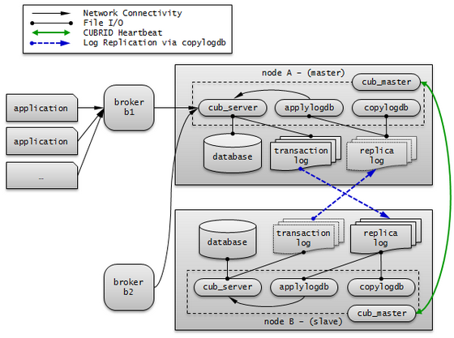CUBRID HA Concept¶
Nodes and Groups¶
A node is a logical unit that makes up CUBRID HA. It can become one of the following nodes according to its status: master node, slave node, or replica node.
- Master node : A node to be replicated. It provides all services which are read, write, etc. using an active server.
- Slave node : A node that has the same information as a master node. Changes made in the master node are automatically reflected to the slave node. It provides the read service using a standby server, and a failover will occur when the master node fails.
- Replica node : A node that has the same information as a master node. Changes made in the master node are automatically reflected to the replica node. It provides the read service using a standby server, and no failover will occur when the master node fails.
The CUBRID HA group consists of the nodes described above. You can configure the members of this group by using the ha_node_list and ha_replica_list in the cubrid_ha.conf file. Nodes in a group have the same information. They exchange status checking messages periodically and a failover will occurs when the master node fails.
A node includes the master process (cub_master), the database server process (cub_server), the replication log copy process (copylogdb), the replication log reflection process (applylogdb), etc.
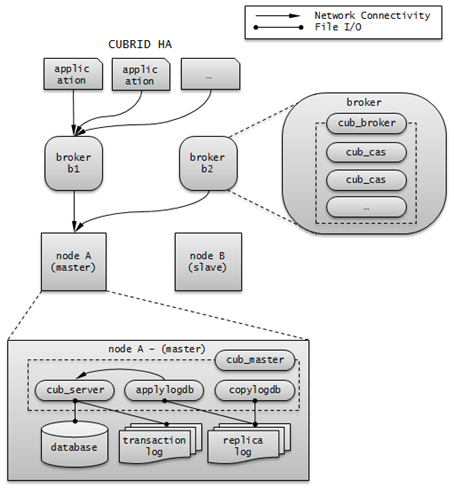Processes¶
A CUBRID HA node consists of one master process (cub_master), one or more database server processes (cub_server), one or more replication log copy processes (copylogdb), and one or more replication log reflection processes (applylogdb). When a database is configured, database server processes, replication log copy processes, and replication log reflection processes will start. Because copy and reflection of a replication log are executed by different processes, the delay in replicating reflections does not affect the transaction that is being executed.
- Master process (cub_master) : Exchanges heartbeat messages to control the internal management processes of CUBRID HA.
- Database server process (cub_server) : Provides services such as read or write to the user. For details, see Servers.
- Replication log copy process (copylogdb) : Copies all transaction logs in a group. When the replication log copy process requests a transaction log from the database server process of the target node, the database server process returns the corresponding log. The location of copied transaction logs can be configured in the ha_copy_log_base of cubrid_ha.conf. Use applyinfo utility to verify the information of copied replication logs. The replication log copy process has following two modes: SYNC and ASYNC. You can configure it with the ha_copy_sync_mode of cubrid_ha.conf. For details on these modes, see Log Multiplexing.
- Replication log reflection process (applylogdb) : Reflects the log that has been copied by the replication log copy process to a node. The information of reflected replications is stored in the internal catalog (db_ha_apply_info). You can use the applyinfo utility to verify this information.
Servers¶
Here, the word “server” is a logical representation of database server processes. Depending on its status, a server can be either an active server or a standby server.
- Active server : A server that belongs to a master node; the status is active. An active server provides all services, including read, write, etc. to the user.
- Standby server : A standby server that belongs to a non-master node; the status is standby. A standby server provides only the read service to the user.
The server status changes based on the status of the node. You can use the cubrid changemode utility to verify server status. The maintenance mode exists for operational convenience and you can change it by using the cubrid changemode utility.
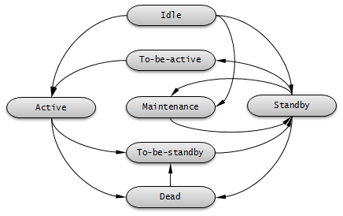- active : The status of servers that run on a master node is usually active. In this status, all services including read, write, etc. are provided.
- standby : The status of servers that run on a slave node or a replica node is standby. In this status, only the read service is provided.
- maintenance : The status of servers can be manually changed for operational convenience is maintenance. In this status, only a csql can access and no service is provided to the user.
- to-be-active : The status in which a standby server will become active for reasons such as failover, etc. is to-be-active. In this status, servers prepare to become active by reflecting transaction logs from the existing master node to its own server. The node in this status can accept only SELECT query.
- Other : This status is internally used.
When the node status is changed, on cub_master process log and cub_server process log, following error messages are saved. But, they are saved only when the value of error_log_level in cubrid.conf is error or less.
The following log information of cub_master process is saved on $CUBRID/log/<hostname>_master.err file.
HA generic: Send changemode request to the server. (state:1[active], args:[cub_server demodb ], pid:25728). HA generic: Receive changemode response from the server. (state:1[active], args:[cub_server demodb ], pid:25728).
The following log information of cub_server is saved on $CUBRID/log/server/<db_name>_<date>_<time>.err file.
Server HA mode is changed from 'to-be-active' to 'active'.
heartbeat Message¶
As a core element to provide HA, it is a message exchanged among master, slave, and replica nodes to monitor the status of other nodes. A master process periodically exchanges heartbeat messages with all other master processes in the group. A heartbeat message is exchanged through the UDP port configured in the ha_port_id parameter of cubrid_ha.conf. The exchange interval of heartbeat messages is determined by an internally configured value.
When the master node fails, a failover occurs to a slave node.
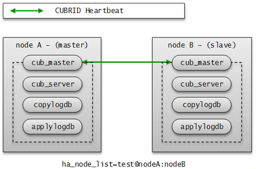failover and failback¶
A failover means that the highest priority slave node automatically becomes a new master node when the original master node fails to provide services due to a failure. A master process calculates scores for all nodes in the CUBRID HA group based on the collected information, promotes slave nodes to master modes when it is necessary, and then notifies the management process of the changes it has made.
A failback means that the previously failed master node automatically becomes a master node back after the failure node is restored. The CUBRID HA does not currently support this functionality.
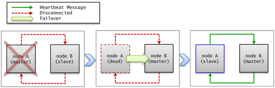If a heartbeat message fails to deliver, a failover will occur. For this reason, servers with unstable connection may experience failover even though no actual failures occur. To prevent a failover from occurring in the situation described above, configure ha_ping_hosts. Configuring ha_ping_hosts will send a ping message to the hosts specified in ha_ping_hosts in order to verify whether the network is stable or not when a heartbeat message fails to deliver. For details on configuring ha_ping_hosts, see cubrid_ha.conf.
Broker Mode¶
A broker can access a server with one of the following modes: Read Write, Read Only or Standby Only. This configuration value is determined by a user.
A broker finds and connects to a suitable DB server by trying to establish a connection in the order of DB server connections; this is, if it fails to establish a connection, it tries another connection to the next DB server defined until it reaches the last DB server. If no connection is made even after trying all servers, the broker fails to connect to a DB server.
For details on how to configure broker mode, see cubrid_broker.conf.
DB connection is affected by PREFERRED_HOSTS, CONNECT_ORDER and MAX_NUM_DELAYED_HOSTS_LOOKUP parameters in cubrid_broker.conf. See Connecting a Broker to DB for further information.
The below is the description if the above parameters are not specified.
Read Write
“ACCESS_MODE=RW”
A broker that provides read and write services. This broker is usually connected to an active server. If there is no active server, this broker will be connected to a standby server temporarily. Therefore, a Read Write broker can be temporarily connected to a standby server.
When the broker temporarily establishes a connection to a standby server, it will disconnect itself from the standby server at the end of every transaction so that it can attempt to find an active server at the beginning of the next transaction. When it is connected to the standby server, only read service is available. Any write requests will result in a server error.
The following picture shows how a broker connects to the host through the db-host configuration.
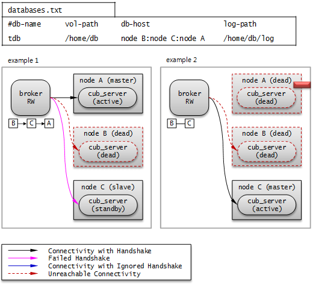The broker tries to connect as the order of B, C, A because db-host in databases.txt is “node B:node C:node A”. At this time, “node B:node C:node A” specified in db-host is the real host names defined in the /etc/hosts file.
- Example 1. node B is crashed, node C is in standby status, and node A is in active status. Therefore, at last, the broker connects to node A.
- Example 2. node B is crashed, and node C is in active status. Therefore, at last, the broker connects to node C.
Read Only
“ACCESS_MODE=RO”
A broker that provides the read service. This broker is connected to a standby server if possible. Therefore, the Read Only broker can be connected to an active server temporarily.
Once it establishes a connection with an active server, it will maintain that connection until the time specified by RECONNECT_TIME. After RECONNECT_TIME, the broker tries to reconnect as disconnecting the old connection. Or you can reconnect to the standby server by running cubrid broker reset. If a write request is delivered to the Read Only broker, an error occurs in the broker; therefore, only the read service will be available even if it is connected to an active server.
The following picture shows how a broker connects to the host through the db-host configuration.
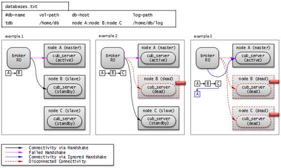The broker tries to connect as the order of A, B, C because db-host in databases.txt is “node A:node B:node C”. At this time, “node A:node B:node C” specified in db-host is the real host names defined in the /etc/hosts file.
- Example 1. node A is in active status, node B is in standby status. Therefore, at last, the broker connects to node B.
- Example 2. node A is in active status, node B is crashed, and node C is in standby status. Therefore, at last, the broker connects to node C.
- Example 3. node A is in active status, node B and node C are crashed. Therefore, at last, the broker connects to node A.
Standby Only
“ACCESS_MODE=SO”
A broker that provides the read service. This broker can only be connected to a standby server. If no standby server exists, no service will be provided.
The following picture shows how a broker connects to the host through the db-host configuration.
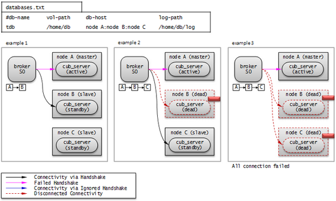The broker tries to connect as the order of A, B, C because db-host in databases.txt is “node A:node B:node C”. At this time, “node A:node B:node C” specified in db-host is the real host names defined in the /etc/hosts file.
- Example 1. node A is in active status, node B is in standby status. Therefore, at last, the broker connects to node B.
- Example 2. node A is in active status, node B is crashed, and node C is in standby status. Therefore, at last, the broker connects to node C.
- Example 3. node A is in active status, node B and node C are crashed. Therefore, at last, the broker does not connect to any node. This is the difference with Read Only broker.
CUBRID HA Features¶
Duplexing Servers¶
Duplexing servers is building a system by configuring duplicate hardware equipment to provide CUBRID HA. This method will prevent any interruptions in a server in case of occurring a hardware failure.
Server failover
A broker defines server connection order and connects to a server according to the defined order. If the connected server fails, the broker connects to the server with the next highest priority. This requires no processing in the application side. The actions taken when the broker connects to another server may differ according to the current mode of the broker. For details on the server connection order and configuring broker mode, see cubrid_broker.conf.
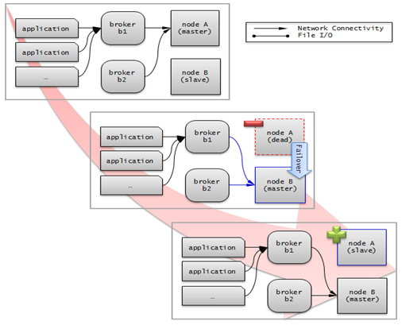Server failback
CUBRID HA does not automatically support server failback. Therefore, to manually apply failback, restore the master node that has been abnormally terminated and run it as a slave node, terminate the node that has become the master from the slave due to failover, and finally, change the role of each node again.
For example, when nodeA is the master and nodeB is the slave, nodeB becomes the master and nodeA becomes the slave after a failover. After terminating nodeB (cubrid heartbeat stop) check (cubrid heartbeat status) whether the status of nodeA has become active. Start (cubrid heartbeat start) nodeB and it will become the slave.
Duplexing Brokers¶
As a 3-tier DBMS, CUBRID has middleware called the broker which relays applications and database servers. To provide HA, the broker also requires duplicate hardware equipment. This method will prevent any interruptions in a broker in case of occurring a hardware failure.
The configuration of broker redundancy is not determined by the configuration of server redundancy; it can be user-defined. In addition, it can be separated by piece of individual equipment.
To use the failover and failback functionalities of a broker, the altHosts attribute must be added to the connection URL of the JDBC, CCI, or PHP. For a description of this, see JDBC Configuration, CCI Configuration and PHP Configuration.
To set a broker, configure the cubrid_broker.conf file. To set the order of failovers of a database server, configure the databases.txt file. For more information, see Configuring and Starting Broker, and Verifying the Broker Status.
The following is an example in which two Read Write (RW) brokers are configured. When the first connection broker of the application URL is set to broker B1 and the second connection broker to broker B2, the application connects to broker B2 when it cannot connect to broker B1. When broker B1 becomes available again, the application reconnects to broker B1.
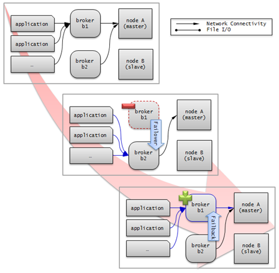The following is an example in which the Read Write (RW) broker and the Read Only (RO) broker are configured in each piece of equipment of the master node and the slave node. First, the app1 and the app2 URL connect to broker A1 (RW) and broker B2 (RO), respectively. The second connection (altHosts) is made to broker A2 (RO) and broker B1 (RW). When equipment that includes nodeA fails, app1 and the app2 connect to the broker that includes nodeB.
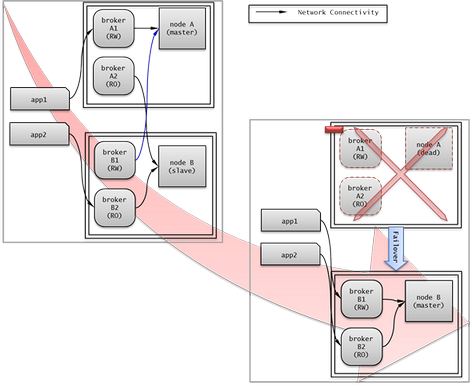The following is an example of a configuration in which broker equipment includes one Read Write broker (master node) and two Preferred Host Read Only brokers (slave nodes). The Preferred Host Read Only brokers are connected to nodeB and nodeC to distribute the reading load.
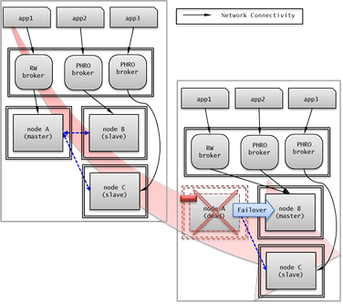Broker failover
The broker failover is not automatically failed over by the settings of system parameters. It is available in the JDBC, CCI, and PHP applications only when broker hosts are configured in the altHosts of the connection URL. Applications connect to the broker with the highest priority. When the connected broker fails, the application connects to the broker with the next highest priority. Configuring the altHosts of the connection URL is the only necessary action, and it is processed in the JDBC, CCI, and PHP drivers.
Broker failback
If the failed broker is recovered after a failover, the connection to the existing broker is terminated and a new connection is established with the recovered broker which has the highest priority. This requires no processing in the application side as it is processed within the JDBC, CCI, and PHP drivers. Execution time of failback depends on the value configured in JDBC connection URL. For details, see JDBC Configuration.
Log Multiplexing¶
CUBRID HA keeps every node in the CUBRID HA group with the identical structure by copying and reflecting transaction logs to all nodes included in the CUBRID HA group. As the log copy structure of CUBRID HA is a mutual copy between the master and the slave nodes, it has a disadvantage of increasing the size of a log volume. However, it has an advantage of flexibility in terms of configuration and failure handling, comparing to the chain-type copy structure.
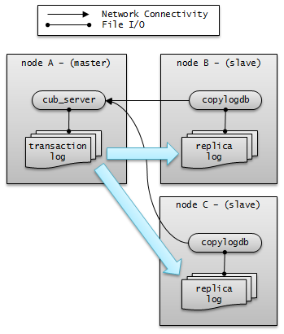The transaction log copy modes include SYNC and ASYNC. This value can be configured by the user in cubrid_ha.conf file.
SYNC Mode
When transactions are committed, the created transaction logs are copied to the slave node and stored as a file. The transaction commit is complete after receiving a notice on its success. Although the time to execute commit in this mode may take longer than that in ASYNC mode, this is the safest method because the copied transaction logs are always guaranteed to be reflected to the standby server even if a failover occurs.
ASYNC Mode
When transactions are committed, commit is complete without verifying the transfer of transaction logs to a slave node. Therefore, it is not guaranteed that committed transactions are reflected to a slave node in a master node side.
Although ASYNC mode provides a better performance as it has almost no delay when executing commit, there may be data inconsistency in its nodes.
Note
SEMISYNC mode is deprecated, and this operates in the same way as SYNC mode.
Quick Start¶
This chapter simply explains how to build a master node and a slave node as 1:1 from DB creation. For details of various replication building methods, see Building Replication.
Preparation¶
Structure Diagram
The diagram below aims to help users who are new to CUBRID HA, by explaining a simple procedure of the CUBRID HA configuration.
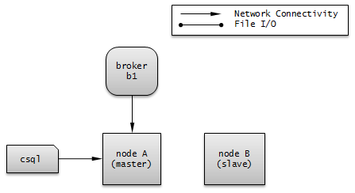Specifications
Linux and CUBRID version 2008 R2.2 or later must be installed on the equipment to be used as the master and the slave nodes. CUBRID HA does not support Windows operating system.
Specifications of Configuring the CUBRID HA Equipment
| CUBRID Version | OS | |
|---|---|---|
| For master nodes | CUBRID 2008 R2.2 or later | Linux |
| For slave nodes | CUBRID 2008 R2.2 or later | Linux |
Note
This document describes the HA configuration in CUBRID 9.2 or later versions. Note that the previous versions have different settings. For example, cubrid_ha.conf is only available in CUBRID 2008 R4.0 or later. ha_make_slavedb.sh is introduced from CUBRID 2008 R4.1 Patch 2 or later.
Creating Databases and Configuring Servers¶
Creating Databases
Create databases to be included in CUBRID HA at each node of the CUBRID HA in the same manner. Modify the options for database creation as needed.
[nodeA]$ cd $CUBRID_DATABASES
[nodeA]$ mkdir testdb
[nodeA]$ cd testdb
[nodeA]$ mkdir log
[nodeA]$ cubrid createdb -L ./log testdb en_US
Creating database with 512.0M size. The total amount of disk space needed is 1.5G.
CUBRID 10.0
[nodeA]$
cubrid.conf
Ensure ha_mode of $CUBRID/conf/cubrid.conf in every CUBRID HA node has the same value. Especially, take caution when configuring the log_max_archives and force_remove_log_archives parameters (logging parameters) and the ha_mode parameter (HA parameter).
# Service parameters
[service]
service=server,broker,manager
# Common section
[common]
service=server,broker,manager
# Server parameters
server=testdb
data_buffer_size=512M
log_buffer_size=4M
sort_buffer_size=2M
max_clients=100
cubrid_port_id=1523
db_volume_size=512M
log_volume_size=512M
# Adds when configuring HA (Logging parameters)
log_max_archives=100
force_remove_log_archives=no
# Adds when configuring HA (HA mode)
ha_mode=on
cubrid_ha.conf
Ensure ha_port_id, ha_node_list, ha_db_list of $CUBRID/conf/cubrid_ha.conf in every CUBRID HA node has the same value. In the example below, we assume that the host name of a master node is nodeA and that of a slave node is nodeB.
[common]
ha_port_id=59901
ha_node_list=cubrid@nodeA:nodeB
ha_db_list=testdb
ha_copy_sync_mode=sync:sync
ha_apply_max_mem_size=500
databases.txt
Ensure that you must configure the host names (nodeA:nodeB) of master and slave nodes in db-host of $CUBRID_DATABASES/databases.txt; if $CUBRID_DATABASES is not configured, do it in $CUBRID/databases/databases.txt).
#db-name vol-path db-host log-path lob-base-path
testdb /home/cubrid/DB/testdb nodeA:nodeB /home/cubrid/DB/testdb/log file:/home/cubrid/DB/testdb/lob
Starting and Verifying CUBRID HA¶
Starting CUBRID HA
Execute the cubrid heartbeat start at each node in the CUBRID HA group. Note that the node executing cubrid heartbeat start first will become a master node. In the example below, we assume that the host name of a master node is nodeA and that of a slave node is nodeB.
Master node
[nodeA]$ cubrid heartbeat start
Slave node
[nodeB]$ cubrid heartbeat start
Verifying CUBRID HA Status
Execute cubrid heartbeat status at each node in the CUBRID HA group to verify its configuration status.
[cubrid@nodeA]$ cubrid heartbeat status
@ cubrid heartbeat list
HA-Node Info (current nodeA, state master)
Node nodeB-node-name (priority 2, state slave)
Node nodeA-node-name (priority 1, state master)
HA-Process Info (nodeA 9289, state nodeA)
Applylogdb testdb@localhost:/home1/cubrid1/DB/testdb_nodeB (pid 9423, state registered)
Copylogdb testdb@nodeB-node-name:/home1/cubrid1/DB/testdb_nodeB (pid 9418, state registered)
Server testdb (pid 9306, state registered_and_active)
[nodeA]$
Use the cubrid changemode utility at each node in the CUBRID HA group to verify the status of the server.
Master node
[nodeA]$ cubrid changemode testdb@localhost The server 'testdb@localhost''s current HA running mode is active.
Slave node
[nodeB]$ cubrid changemode testdb@localhost The server 'testdb@localhost''s current HA running mode is standby.
Verifying the CUBRID HA Operation
Verify that action is properly applied to standby server of the slave node after performing write in an active server of the master node. To make a success connection via the CSQL Interpreter in HA environment, you must specify the host name to be connected after the database name like “@<host_name>”). If you specify a host name as localhost, it is connected to local node.
Warning
Ensure that primary key must exist when creating a table to have replication successfully processed.
Master node
[nodeA]$ csql -u dba testdb@localhost -c "create table abc(a int, b int, c int, primary key(a));" [nodeA]$ csql -u dba testdb@localhost -c "insert into abc values (1,1,1);" [nodeA]$
Slave node
[nodeB]$ csql -u dba testdb@localhost -l -c "select * from abc;" === <Result of SELECT Command in Line 1> === <00001> a: 1 b: 1 c: 1 [nodeB]$
Configuring and Starting Broker, and Verifying the Broker Status¶
Configuring the Broker
To provide normal service during a database failover, it is necessary to configure an available database node in the db-host of databases.txt. And ACCESS_MODE in the cubrid_broker.conf file must be specified; if it is omitted, the default value is configured to Read Write mode. If you want to divide into a separate device, you must configure cubrid_broker.conf and databases.txt in the broker device.
databases.txt
#db-name vol-path db-host log-path lob-base-path testdb /home1/cubrid1/CUBRID/testdb nodeA:nodeB /home1/cubrid1/CUBRID/testdb/log file:/home1/cubrid1/CUBRID/testdb/lob
cubrid_broker.conf
[%testdb_RWbroker] SERVICE =ON BROKER_PORT =33000 MIN_NUM_APPL_SERVER =5 MAX_NUM_APPL_SERVER =40 APPL_SERVER_SHM_ID =33000 LOG_DIR =log/broker/sql_log ERROR_LOG_DIR =log/broker/error_log SQL_LOG =ON TIME_TO_KILL =120 SESSION_TIMEOUT =300 KEEP_CONNECTION =AUTO CCI_DEFAULT_AUTOCOMMIT =ON # broker mode parameter ACCESS_MODE =RW
Starting Broker and Verifying its Status
A broker is used to access applications such as JDBC, CCI or PHP. Therefore, to simply test server redundancy, execute the CSQL interpreter that is directly connected to the server processes, without having to start a broker. To start a broker, execute cubrid broker start. To stop it, execute cubrid broker stop.
The following example shows how to execute a broker from the master node.
[nodeA]$ cubrid broker start
@ cubrid broker start
++ cubrid broker start: success
[nodeA]$ cubrid broker status
@ cubrid broker status
% testdb_RWbroker
---------------------------------------------------------
ID PID QPS LQS PSIZE STATUS
---------------------------------------------------------
1 9532 0 0 48120 IDLE
Configuring Applications
Specifies the host name (nodeA_broker, nodeB_broker) and port for an application to connect in the connection URL. The altHosts attribute defines the broker where the next connection will be made when the connection to a broker fails. The following is an example of a JDBC program. For more information on CCI and PHP, see CCI Configuration and PHP Configuration.
Connection connection = DriverManager.getConnection("jdbc:CUBRID:nodeA_broker:33000:testdb:::?charSet=utf-8&altHosts=nodeB_broker:33000", "dba", "");
Environment Configuration¶
The below is the description for setting the HA environment. See Connecting a Broker to DB for further information regarding the process connecting between a broker and a DB server.
cubrid.conf¶
The cubrid.conf file that has general information on configuring CUBRID is located in the $CUBRID/conf directory. This page provides information about cubrid.conf parameters used by CUBRID HA.
HA or Not¶
ha_mode
ha_mode is a parameter used to configure whether to use CUBRID HA. The default value is off. CUBRID HA does not support Windows; it supports Linux only.
- off : CUBRID HA is not used.
- on : CUBRID HA is used. Failover is supported for its node.
- replica : CUBRID HA is used. Failover is not supported for its node.
If ha_mode is on, the CUBRID HA values are configured by reading cubrid_ha.conf.
This parameter cannot be modified dynamically. To modify the value of this parameter, you must restart it.
Logging¶
log_max_archives
log_max_archives is a parameter used to configure the minimum number of archive log files to be archived. The minimum value is 0 and the default is INT_MAX (2147483647). When CUBRID has installed for the first time, this value is set to 0 in the cubrid.conf file. The behavior of the parameter is affected by force_remove_log_archives.
If the value of force_remove_log_archives is set to no, the existing archive log files to which the activated transaction refers or the archive log files of the master node not reflected to the slave node in HA environment will not be deleted. For details, see the following force_remove_log_archives.
For details about log_max_archives, see Logging-Related Parameters.
force_remove_log_archives
It is recommended to configure force_remove_log_archives to no so that archive logs to be used by HA-related processes always can be maintained to set up HA environment by configuring ha_mode to on.
If you configure the value for force_remove_log_archives to yes, the archive log files which will be used in the HA-related process can be deleted, and this may lead to an inconsistency between replicated databases. If you want to maintain free disk space even though doing this could lead to risk, you can configure the value to yes.
For details about force_remove_log_archives, see Logging-Related Parameters.
Note
From 2008 R4.3 in replica mode, it will be always deleted except for archive logs as many as specified in the log_max_archives parameter, regardless the force_remove_log_archives value specified.
Access¶
max_clients
max_clients is a parameter used to configure the maximum number of clients to be connected to a database server simultaneously. The default is 100.
Because the replication log copy and the replication log reflection processes start by default if CUBRID HA is used, you must configure the value to twice the number of all nodes in the CUBRID HA group, except the corresponding node. Furthermore, you must consider the case in which a client that is connected to another node at the time of failover attempts to connect to that node.
For details about max_clients, see Connection-Related Parameters.
The Parameters That Must Have the Same Value for All Nodes
- log_buffer_size : The size of a log buffer. This must be same for all nodes, as it affects the protocol between copylogdb that duplicate the server and logs.
- log_volume_size : The size of a log volume. In CUBRID HA, the format and contents of a transaction log are the same as that of the replica log. Therefore, the parameter must be same for all nodes. If each node creates its own DB, the cubrid createdb options (–db-volume-size, –db-page-size, –log-volume-size, –log-page-size, etc.) must be the same.
- cubrid_port_id : The TCP port number for creating a server connection. It must be same for all nodes in order to connect copylogdb that duplicate the server and logs.
- HA-related parameters : HA parameters included in cubrid_ha.conf must be identical by default. However, the following parameters can be set differently according to the node.
The Parameters That Can be Different Among Nodes
- The ha_mode parameter in replica node
- The ha_copy_sync_mode parameter
- The ha_ping_hosts parameter
- The ha_tcp_ping_hosts parameter
Example
The following example shows how to configure cubrid.conf. Please take caution when configuring log_max_archives and force_remove_log_archives (logging-related parameters), and ha_mode (an HA-related parameter).
# Service Parameters
[service]
service=server,broker,manager
# Server Parameters
server=testdb
data_buffer_size=512M
log_buffer_size=4M
sort_buffer_size=2M
max_clients=200
cubrid_port_id=1523
db_volume_size=512M
log_volume_size=512M
# Adds when configuring HA (Logging parameters)
log_max_archives=100
force_remove_log_archives=no
# Adds when configuring HA (HA mode)
ha_mode=on
log_max_archives=100
cubrid_ha.conf¶
The cubrid_ha.conf file that has generation information on CUBRID HA is located in the $CUBRID/conf directory. CUBRID HA does not support Windows; it supports Linux only.
See Connecting a Broker to DB for further information regarding the process connecting between a broker and a DB server.
Node¶
ha_node_list
ha_node_list is a parameter used to configure the group name to be used in the CUBRID HA group and the host name of member nodes in which failover is supported. The group name is separated by @. The name before @ is for the group, and the names after @ are for host names of member nodes. A comma(,) or colon(:) is used to separate individual host names. The default is localhost@localhost.
Note
The host name of the member nodes specified in this parameter cannot be replaced with the IP. You should use the host names which are registered in /etc/hosts.
If the host name is not specified properly, the below message is written into the server.err error log file.
Time: 04/10/12 17:49:45.030 - ERROR *** file ../../src/connection/tcp.c, line 121 ERROR CODE = -353 Tran = 0, CLIENT = (unknown):(unknown)(-1), EID = 1 Cannot make connection to master server on host "Wrong_HOST_NAME".... Connection timed out
A node in which the ha_mode value is set to on must be specified in ha_node_list. The value of the ha_node_list of all nodes in the CUBRID HA group must be identical. When a failover occurs, a node becomes a master node in the order specified in the parameter.
This parameter can be modified dynamically. If you modify the value of this parameter, you must execute cubrid heartbeat reload to apply the changes.
ha_replica_list
ha_replica_list is a parameter used to configure the group name, which is used in the CUBRID HA group, and the replica nodes, which are host names of member nodes in which failover is not supported. There is no need to specify this if you do not construct replica nodes. The group name is separated by @. The name before @ is for the group, and the names after @ are for host names of member nodes. A comma(,) or colon(:) is used to separate individual host names. The default is NULL.
The group name must be identical to the name specified in ha_replica_list. The host names of member nodes and the host names of nodes specified in this parameter must be registered in /etc/hosts. A node in which the ha_mode value is set to replica must be specified in ha_replica_list. The ha_replica_list values of all nodes in the CUBRID HA group must be identical.
This parameter can be modified dynamically. If you modify the value of this parameter, you must execute cubrid heartbeat reload to apply the changes.
Note
The host name of the member nodes specified in this parameter cannot be replaced with the IP. You should use the host names which are registered in /etc/hosts.
ha_db_list
ha_db_list is a parameter used to configure the name of the database that will run in CUBRID HA mode. The default is NULL. You can specify multiple databases by using a comma (,).
Access¶
ha_port_id
ha_port_id is a parameter used to configure the UDP port number; the UDP port is used to detect failure when exchanging heartbeat messages. The default is 59,901.
If a firewall exists in the service environment, the firewall must be configured to allow the configured port to pass through it.
ha_ping_hosts
ha_ping_hosts is a parameter used to configure the host which verifies whether or not a failover occurs due to unstable network when a failover has started in a slave node. The default is NULL. A comma(,) or colon(:) is used to separate individual host names.
The host name of the member nodes specified in this parameter can be replaced with the IP. When a host name is used, the name must be registered in /etc/hosts.
CUBRID checks hosts specified in ha_ping_hosts every hour; if there is a problem on a host, “ping check” is paused temporarily and checks every 5 minutes if the host is normalized or not.
Configuring this parameter can prevent split-brain, a phenomenon in which two master nodes simultaneously exist as a result of the slave node erroneously detecting an abnormal termination of the master node due to unstable network status and then promoting itself as the new master.
However, the “ping check” does not work if the ICMP protocol is disabled. CUBRID provides ha_tcp_ping_hosts as an alternative to address this.
ha_tcp_ping_hosts
ha_tcp_ping_hosts is a parameter that can be used as an alternative to ha_ping_hosts when the ICMP protocol is disabled. ha_tcp_ping_hosts works like ha_ping_hosts except that the TCP layer is used instead of the IP layer for the “ping check”. The default is NULL. A comma(,) is used to separate individual host names, and a colon(:) is used to separate a host name and a port number. So, the format of this parameter is like “ha_tcp_ping_hosts=host1:port1,host2:port2”. In order to use the TCP ping properly, a TCP socket that can receive the requests must be opened in advance with the port number on the host specified in ha_tcp_ping_hosts and the firewall must not block the requests. ha_tcp_ping_hosts is ignored if the ha_ping_hosts is also set.
Replication¶
ha_copy_sync_mode
ha_copy_sync_mode is a parameter used to configure the mode of storing the replication log, which is a copy of transaction log. The default is SYNC.
The value can be one of the following: SYNC and ASYNC. The number of values must be the same as the number of nodes specified in ha_node_list. They must be ordered by the specified value. You can specify multiple modes by using a comma(,) or colon(:). The replica node is always working in ASNYC mode regardless of this value.
For details, see Log Multiplexing.
ha_copy_log_base
Specifies the parent path for saving replication logs. The default value is the directory path set in the $CUBRID_DATABASES environment variable. Replication logs are stored in a subdirectory of <db_name>_<host_name>, depending on the server and database name.
The replication log path can be set to either a relative or absolute path. The following are examples of each setting.
ex1) ha_copy_log_base=copylog: Considered a relative path and stores replication logs in $CUBRID_DATABASES/copylog. ex2) ha_copy_log_base=/log/copy_log: Saves replication logs in /log/copy_log as an absolute path.
ha_copy_log_max_archives
ha_copy_log_max_archives is a parameter used to configure the maximum number of keeping replication log files. The default is 1. However, even if the number of replication log files exceeds the specified number of replication log files, they are not deleted if they are not applied to the database.
To prevent wasting needless disk space, it is recommended to keep this value as 1, the default.
ha_apply_max_mem_size
ha_apply_max_mem_size is a parameter used to configure the value of maximum memory that the replication log reflection process of CUBRID HA can use. The default value is 500 (unit: MB) and the maximum value is INT_MAX (2147483647). When the value is larger than the size allowed by the system, memory allocation fails and the HA replication reflection process may malfunction. For this reason, you must check whether or not the memory resource can handle the specified value before setting it.
ha_applylogdb_ignore_error_list
ha_applylogdb_ignore_error_list is a parameter used to configure for proceeding replication in CUBRID HA process by ignoring an error occurrence. The error codes to be ignored are separated by a comma (,). This value has a high priority. Therefore, when this value is the same as the value of the ha_applylogdb_retry_error_list parameter or the error code of “List of Retry Errors,” the values of the ha_applylogdb_retry_error_list parameter or the error code of “List of Retry Errors” are ignored and the tasks that cause the error are not retried. For “List of Retry Errors,” see the description of ha_applylogdb_retry_error_list below.
ha_applylogdb_retry_error_list
ha_applylogdb_retry_error_list is a parameter used to configure for retrying tasks that caused an error in the replication log reflection process of CUBRID HA until the task succeeds. When specifying errors to be retried, separate each error with a comma (,). The following table shows the default “List of Retry Errors.” If these values exist in ha_applylogdb_ignore_error_list, the error will be overridden.
List of Retry Errors
Error Code Name Error Code ER_LK_UNILATERALLY_ABORTED -72 ER_LK_OBJECT_TIMEOUT_SIMPLE_MSG -73 ER_LK_OBJECT_TIMEOUT_CLASS_MSG -74 ER_LK_OBJECT_TIMEOUT_CLASSOF_MSG -75 ER_LK_PAGE_TIMEOUT -76 ER_PAGE_LATCH_TIMEDOUT -836 ER_PAGE_LATCH_ABORTED -859 ER_LK_OBJECT_DL_TIMEOUT_SIMPLE_MSG -966 ER_LK_OBJECT_DL_TIMEOUT_CLASS_MSG -967 ER_LK_OBJECT_DL_TIMEOUT_CLASSOF_MSG -968 ER_LK_DEADLOCK_CYCLE_DETECTED -1021
ha_replica_delay
This parameter specifies the term of applying the replicated data between a master node and a replica node. CUBRID intentionally delays replicating by the specified time. You can set a unit as ms, s, min or h, which stands for milliseconds, seconds, minutes or hours respectively. If you omit the unit, milliseconds(ms) will be applied. The default value is 0.
ha_replica_time_bound
In a master node, only the transactions which have been run on the specified time with this parameter are applied to the replica node. The format of this value is “YYYY-MM-DD hh:mi:ss”. There is no default value.
Note
The following example shows how to configure cubrid_ha.conf.
[common]
ha_node_list=cubrid@nodeA:nodeB
ha_db_list=testdb
ha_copy_sync_mode=sync:sync
ha_apply_max_mem_size=500
Note
The following example shows how to configure the value of /etc/hosts (a host name of a member node: nodeA, IP: 192.168.0.1).
127.0.0.1 localhost.localdomain localhost
192.168.0.1 nodeA
ha_delay_limit
ha_delay_limit is a standard time for CUBRID itself to measure replication delay status, and ha_delay_limit_delta is a value to subtract a time which replication delay is released from a replication delay time. Once a server is measured as a replication delay, it keeps this status until the replication delay time is equal or lower than (ha_delay_limit - ha_delay_limit_delta). A slave node or a replica node corresponds to a standby DB server, that is a target server to judge whether replication is delayed or not.
For example, if you want set replication delay time as 10 minutes and replication-delay-releasing time as 8 minutes, the value of ha_delay_limit will be 600s(or 10min) and the value of ha_delay_limit_delta will be 120s(or 2min).
If it is measured as replication delay, CAS judges that there is a problem for standby DB to process jobs, and attempts to reconnect the other standby DBs.
CAS, which is connected to the DB which has the lower priority because of the replication delay, expects that the replication delay is released when the time by RECONNECT_TIME in cubrid_broker.conf is elapsed, then attempts to reconnect to the standby DB which has higher priority.
ha_delay_limit_delta
See the above description of ha_delay_limit.
ha_copy_log_timeout
This is the maximum value of the time in which a node’s database server process (cub_server) waits a response from another node’s replication-log-copy process (copylogdb). The default is 5(seconds). If this value is -1, this means to be infinite wait. It only works with SYNC log copy mode(ha_copy_sync_mode) parameter.
ha_check_disk_failure_interval
CUBRID judges the disk failure for each time which is set to the value of this parameter. The default is 15, and the unit is second.
- If the value of ha_copy_log_timeout parameter is -1, the value of ha_check_disk_failure_interval parameter is ignored and the disk failure is not judged.
- If the value of ha_check_disk_failure_interval parameter is smaller than the value of ha_copy_log_timeout parameter, the disk failure is judged for each ha_copy_log_timeout + 20 seconds.
ha_unacceptable_proc_restart_timediff
When the abnormal status of a server process is kept, the server can be restarted infinitely; it is better to remove this kind of node from the HA components. Because the server is restarted within a short time when the abnormal status is continued, specify this term with this parameter to detect this situation. If the server is restarted within the specified term, CUBRID assumes that this server is abnormal and remove(demote) this node from the HA components. The default is 2min. If the unit is omitted, it is specified as milliseconds(msec).
SQL Logging¶
ha_enable_sql_logging
If the value of this parameter is yes, CUBRID generates the log file of SQL which applylogdb process applies to the DB volume. The log file is located under the sql_log of the replication log directory(ha_copy_log_base). The default is no.
The format of this log file name is <db name>_<master hostname>.sql.log.<id>, and <id> starts from 0. If this size is over ha_sql_log_max_size_in_mbytes, a new file with “<id> + 1” is created. For example, if “ha_sql_log_max_size_in_mbytes=100”, demodb_nodeA.sql.log.1 is newly created as the size of demodb_nodeA.sql.log.0 file becomes 100MB.
By default, only two latest SQL log files are maintained, and the maximum number of them can be adjusted through ha_sql_log_max_count.
The SQL log format is as follows.
INSERT/DELETE/UPDATE
-- date | SQL id | SELECT query's length for sampling | the length of a transformed query -- SELECT query for sampling transformed query
-- 2013-01-25 15:16:41 | 40083 | 33 | 114 -- SELECT * FROM [t1] WHERE "c1"=79186; INSERT INTO [t1]("c1", "c2", "c3") VALUES (79186,'b3beb3decd2a6be974',0);
DDL
-- date | SQL id | 0 | the length of a transformed query DDL query (GRANT query will follow when CREATE TABLE, to grant the authority to the table created with DBA authority.)
-- 2013-01-25 14:22:59 | 1 | 0 | 50 create class t1 ( id integer, primary key (id) ); -- 2013-01-25 14:22:59 | 2 | 0 | 38 GRANT ALL PRIVILEGES ON [t1] TO public;
Warning
When you apply this SQL log from a specific point as creating other DB, triggers should be turned off because the jobs performed by triggers from master node are written to the SQL log file.
- See TRIGGER_ACTION for turning off the triggers with a broker configuration.
- See
csql --no-trigger-actionfor tunning off the triggers when you run CSQL.
ha_sql_log_max_size_in_mbytes
The value of this parameter is the maximum size of the file which is created when SQL applied to DB by applylogdb process is logged. The new file is created when the size of a log file is over this value.
ha_sql_log_max_count
The value of this parameter indicates the maximum number of SQL log files to be maintained. The oldest ones are removed when the number of SQL log files exceeds this. This parameter can be set within the range of 2 to 5, and the default is 2. ha_sql_log_max_count and ha_sql_log_max_size_in_mbytes need to be set properly in order to adjust the amount of SQL log to maintain.
ha_sql_log_path
The value of this parameter indicates the path where the SQL log files will be created. The default value is NULL. This parameter can be set to an absolute or relative path. If a relative path is set, it is determined based on the replication log directory described in ha_enable_sql_logging. The database server process (cub_server) should have appropriate permissions on the path to create SQL log files. If this parameter is not set, the SQL log files will be created on the path described in ha_enable_sql_logging
cubrid_broker.conf¶
The cubrid_broker.conf file that has general information on configuring CUBRID broker is located in the $CUBRID/conf directory. This section explains the parameters of cubrid_broker.conf that are used by CUBRID HA.
See Connecting a Broker to DB for further information regarding the process connecting between a broker and a DB server.
Access Target¶
ACCESS_MODE
ACCESS_MODE is a parameter used to configure the mode of a broker. The default is RW.
Its value can be one of the following: RW (Read Write), RO (Read Only), SO (Standby Only), or PHRO (Preferred Host Read Only). For details, see Broker Mode.
REPLICA_ONLY
CAS is only accessed to the replica DB if the value of REPLICA_ONLY is ON. The default is OFF. If the value of REPLICA_ONLY is ON and the value of ACCESS_MODE is RW, writing job is possible to even replica DB.
Access Order¶
CONNECT_ORDER
This parameter specifies whether the host-connecting order from a CAS is sequential or random. The host is configured from db-host of $CUBRID_DATABASES/databases.txt.
The default is SEQ; CAS tries to connect in the order. When it is RANDOM, CAS tries to randomly connect. If PREFERRED_HOSTS parameter is given, CAS tries to connect to the hosts configured in PREFERRED_HOSTS with the order, then uses the value of db-host only when the connection by PREFERRED_HOSTS fails; and CONNECT_ORDER does not affects on the order of PREFERRED_HOSTS.
If you concern that the connections are centralized into one DB, set this value as RANDOM.
PREFERRED_HOSTS
Specify the order to connect by listing host names. The default value is NULL.
You can specify multiple nodes by using a colon (:). First, it tries to connect to host in the following order: host specified in the PREFERRED_HOSTS parameter first and then host specified in $CUBRID_DATABASES/databases.txt.
The following example shows how to configure cubrid_broker.conf. To access localhost in a first priority, set PREFERRED_HOSTS as localhost.
[%PHRO_broker]
SERVICE =ON
BROKER_PORT =33000
MIN_NUM_APPL_SERVER =5
MAX_NUM_APPL_SERVER =40
APPL_SERVER_SHM_ID =33000
LOG_DIR =log/broker/sql_log
ERROR_LOG_DIR =log/broker/error_log
SQL_LOG =ON
TIME_TO_KILL =120
SESSION_TIMEOUT =300
KEEP_CONNECTION =AUTO
CCI_DEFAULT_AUTOCOMMIT =ON
# Broker mode setting parameter
ACCESS_MODE =RO
PREFERRED_HOSTS =localhost
Access Limitation¶
MAX_NUM_DELAYED_HOSTS_LOOKUP
When replication is delayed on all DB servers in the HA environment which specified multiple DB servers to db-host of databases.txt, CUBRID checks the replication-delayed servers until only the specified numbers in the MAX_NUM_DELAYED_HOSTS_LOOKUP parameter and decides the connection(checking the delay of replication is judged for the standby hosts; the delayed time is decided by the ha_delay_limit parameter). Also, MAX_NUM_DELAYED_HOSTS_LOOKUP is not applied to PREFERRED_HOSTS.
For example, when db-host is specified as “host1:host2:host3:host4:host5” and “MAX_NUM_DELAYED_HOSTS_LOOKUP=2”, if the status of them as follows:
- host1: active status
- host2: standby status, replication is delayed
- host3: unable to access
- host4: standby status, replication is delayed
- host5: standby status, replication is not delayed
then the broker tries to access the two hosts, host2 and host4 which their replications are delayed, then decides to access host4.
The reason to behave like the above is that CUBRID assumes that the replication will be delayed to the other hosts if the replication of the number(specified by MAX_NUM_DELAYED_HOSTS_LOOKUP) of hosts are delayed; therefore, CUBRID decides to connect to the last hosts which CUBRID have tried to access, as CUBRID does not try to access for the left hosts. However, if PREFERRED_HOSTS is specified together, CUBRID tries to access to them first and then tries to access to the hosts of db-host list from the first.
The step which the broker accesses CUBRID is divided into the primary connection and the secondary connection.
The primary connection: the step which the broker tries to access DB at first.
It checks the DB status(active/standby) and whether the replication is delayed or not. At this time, the broker checks DB’s status if it’s active or standby based on the ACCESS_MODE then decides the connection.
The secondary connection: After the failure of the primary connection, the broker tries to connect from the failed position. At this time, the broker ignores the DB status(active/standby) and the delay of replication. However, SO broker always accepts a connection only to a standby DB.
At this time, the connection is decided if the DB is accessible, by ignoring the delay of replication and DB status(active/standby). However, the error can occur during the query execution. For example, If ACCESS_MODE of the broker is RW but the broker accesses standby DB, it occurs an error during INSERT operation. Regardless of the error, after it is connected to a standby DB and the transaction is executed, the broker retries the primary connection. However, SO broker can never connect to the active DB.
Depending on the value of MAX_NUM_DELAYED_HOSTS_LOOKUP, how the number of hosts, attempting to connect is limited as follows:
MAX_NUM_DELAYED_HOSTS_LOOKUP=-1
The same as you do not specify this parameter, which is the default value. In this case, at the primary step, the delay of replication and the DB status are checked to the end, then the connection is decided. At the second step, even if there is a replication, or even if that is not the expected DB status(active/standby), the broker connects to the last host which was accessible.
MAX_NUM_DELAYED_HOSTS_LOOKUP=0
The secondary connection is processed after the connection is tried only to PREFERRED_HOSTS at the primary step; and at the secondary step, the broker tries to connect to a host even it is delayed in replication or it is not an expected DB status(active/standby). That is, because it is the secondary connection, RW broker can connect to a standby host and RO broker can connect to an active host. However, SO broker can never connect to the active DB.
MAX_NUM_DELAYED_HOSTS_LOOKUP=n(>0)
The broker tries to connect until the specified number of replication-delayed hosts. At the primary connection, the broker inspects until the specified number of replication-delayed hosts; at the secondary connection, the broker connects to a host that there is a delay of replication.
Reconnection¶
RECONNECT_TIME
When a broker tries to connect a DB server which are not in PREFERRED_HOSTS, RO broker tries to connect to active DB server, or a broker tries to connect to the replication-delayed DB server, if connecting time is over RECONNECT_TIME(default: 10min), the broker tries to reconnect.
See RECONNECT_TIME for further information.
databases.txt¶
The databases.txt file has information on the order of servers for the CAS of a broker to connect. It is located in the $CUBRID_DATABASES (if not specified, $CUBRID/databases) directory; the information can be configured by using db_hosts. You can specify multiple nodes by using a colon (:). If “CONNECT_ORDER=RANDOM”, the connection order is decided as randomly. But if PREFERRED_HOSTS is specified, the specified hosts have the first priority of the connection order.
The following example shows how to configure databases.txt.
#db-name vol-path db-host log-path lob-base-path
testdb /home/cubrid/DB/testdb nodeA:nodeB /home/cubrid/DB/testdb/log file:/home/cubrid/DB/testdb/lob
JDBC Configuration¶
To use CUBRID HA in JDBC, you must specify the connection information of another broker (nodeB_broker) to be connected when a failure occurs in broker (nodeA_broker). The attribute configured for CUBRID HA is altHosts which represents information of one or more broker nodes to be connected. For details, see Configuration Connection.
The following example shows how to configure JDBC:
Connection connection = DriverManager.getConnection("jdbc:CUBRID:nodeA_broker:33000:testdb:::?charSet=utf-8&altHosts=nodeB_broker:33000", "dba", "");
CCI Configuration¶
To use CUBRID HA in CCI, you must use the cci_connect_with_url() function which additionally allows specifying connection information in connection URL; the connection information is used when a failure occurs in broker. The attribute configured for CUBRID HA is altHosts which represents information of one or more broker nodes to be connected.
The following example shows how to configure CCI.
con = cci_connect_with_url ("cci:CUBRID:nodeA_broker:33000:testdb:::?altHosts=nodeB_broker:33000", "dba", NULL);
if (con < 0)
{
printf ("cannot connect to database\n");
return 1;
}
PHP Configuration¶
To use the functions of CUBRID HA in PHP, connect to the broker by using cubrid_connect_with_url, which is used to specify the connection information of the failover broker in the connection URL. The attribute specified for CUBRID HA is altHosts, the information on one or more broker nodes to be connected when a failover occurs.
The following example shows how to configure PHP.
<?php
$con = cubrid_connect_with_url ("cci:CUBRID:nodeA_broker:33000:testdb:::?altHosts=nodeB_broker:33000", "dba", NULL);
if ($con < 0)
{
printf ("cannot connect to database\n");
return 1;
}
?>
Note
If you want to run smoothly the broker’s failover in the environment which the broker’s failover is enabled by setting altHosts, you should set the value of disconnectOnQueryTimeout in URL as true.
If this value is true, an application program releases the existing connection from a broker and reconnects to the other broker which is specified on altHosts.
Connecting a Broker to DB¶
A broker in HA environment should decide the one DB server to connect among multiple DB servers. At this time, it is different depending on the setting of the DB server and broker; how to connect to the DB server and what DB server should be chosen. In this chapter, we will look over how a broker choose DB server by the setting of HA environment. See Environment Configuration for the description about each parameters used in the environment setting.
Here are the main parameters used in the DB connection with the broker.
| Location | Configuration file | Parameter name | Description |
|---|---|---|---|
| DB server | cubrid.conf | ha_mode | HA mode(on/off/replica) of DB server. Default: off |
| cubrid_ha.conf | ha_delay_limit | A period to determine whether the replication-delay | |
| ha_delay_limit_delta | Time subtracting the resolution time of replication-delay from the time of replication-delay | ||
| Broker | cubrid_broker.conf | ACCESS_MODE | Broker mode(RW/RO/SO). Default: RW |
| REPLICA_ONLY | Connectible to REPLICA server or not(ON/OFF). Default: OFF | ||
| PREFERRED_HOSTS | Connecting to the host that is specified here in priority to the host that you set in the db-host of databases.txt | ||
| MAX_NUM_DELAYED_HOSTS_LOOKUP | The number of hosts to determine the delay of replication in databases.txt. If up to the specified number of hosts was determined as the delay of replication, the broker is connected to the host checked at last.
|
||
| RECONNECT_TIME | Time to try reconnecting after the broker is connected to the improper DB server. Default: 600s. If this value is 0, no try for reconnection. | ||
| CONNECT_ORDER | A parameter specifying the connecting order whether to connect as or the random order(SEQ/RANDOM). Default: SEQ |
Connection Process¶
When a broker accesses DB server, it tries the primary connection; if it fails, it tries the secondary connection.
- The primary connection: Check the DB status(active/standby) and the delay of replication.
- A broker tries to connect as the order specified by PREFERRED_HOSTS. The broker rejects connecting to the improper DB of which the status does not match with ACCESS_MODE or in which the replication is delayed.
- By the CONNECT_ORDER, a broker tries to connect to the host in the order specified in databases.txt or the random order. The broker checks the DB status followed by the ACCESS_MODE and checks the replication-delayed host up to the number specified in MAX_NUM_DELAYED_HOSTS_LOOKUP.
- The secondary connection: Ignore the DB status(active/standby) and the delay of replication. However, SO broker always accepts to connect only to standby DB.
- A broker tries to connect as the order specified by PREFERRED_HOSTS. The broker accepts connecting to the improper DB of which status does not match with ACCESS_MODE or in which the replication is delayed. However, SO broker can never connect to active DB.
- By the CONNECT_ORDER, a broker tries to connect to the host in the order specified in databases.txt or the random order. The broker ignores the DB status(active/standby) and the delay of replication; it is connected if possible.
Examples on Behaviours by Configuration¶
The following shows the example of configuration.
Host DB status
- host1: active
- host2: standby, replication is delayed.
- host3: standby, replica, unable to access.
- host4: standby, replica, replication is delayed.
- host5: standby, replica, replication is delayed.
When the status of host DBs are as the above, the below shows samples of behaviours by the configuration.
Behaviours by configuration
- 2-1, 2-2, 2-3: From 2, (+) is addition and (#) is modification.
- 3-1, 3-2, 3-3: From 3, (+) is addition and (#) is modification.
| No. | Configuration | Behavior |
|---|---|---|
| 1 |
|
At the primary connection try, a broker checks if DB status is active.
The broker tries to reconnect after the RECONNECT_TIME because it did not connect to PREFERRED_HOSTS. |
| 2 |
|
At the primary connection try, a broker checks if DB status is standby.
At the secondary connection try, a broker ignores DB status and replication-delay.
Because the broker accessed the replication-delayed server, it tries to reconnect after RECONNECT_TIME. |
| 2-1 |
|
At the primary connection try, a broker checks if DB status is standby.
At the secondary connection try, a broker ignores DB status and replication-delay.
Because the broker accessed the active server, it tries to reconnect after RECONNECT_TIME. |
| 2-2 |
|
At the primary connection try, a broker checks if DB status is standby.
At the secondary connection try, a broker ignores DB status and replication-delay.
Because the broker accessed the active server, it tries to reconnect after RECONNECT_TIME. |
| 2-3 |
|
At the primary connection try, a broker checks if DB status is standby.
At the secondary connection try, a broker ignores DB status and replication-delay.
Because the broker accessed the replication-delayed server, it tries to reconnect after RECONNECT_TIME. |
| 3 |
|
At the primary connection try, a broker checks if DB status is standby.
At the secondary connection try, a broker checks if DB status is standby but ignores replication-delay.
Because the broker accessed the replication-delayed server, it tries to reconnect after RECONNECT_TIME. |
| 3-1 |
|
At the primary connection try, a broker checks if DB status is standby.
At the secondary connection try, a broker checks if DB status is standby but ignores replication-delay.
Because the broker accessed the replication-delayed server, it tries to reconnect after RECONNECT_TIME. |
| 3-2 |
|
At the primary connection try, a broker checks if DB status is standby.
At the secondary connection try, a broker checks if DB status is standby but ignores replication-delay.
Because the broker accessed the replication-delayed server, it tries to reconnect after RECONNECT_TIME. |
| 3-3 |
|
At the primary connection try, a broker checks if DB status is standby.
At the secondary connection try, a broker checks if DB status is standby but ignores replication-delay.
Because the broker accessed the replication-delayed server, it tries to reconnect after RECONNECT_TIME. |
Running and Monitoring¶
cubrid heartbeat Utility¶
cubrid heartbeat command can be run as cubrid hb, the abbreviated command.
start¶
This utility is used to activate CUBRID HA feature and start all processes of CUBRID HA in the node(database server process, replication log copy process, and replication log reflection process). Note that a master node or a slave node is determined based on the execution order of cubrid heartbeat start.
How to execute the command is as shown below.
$ cubrid heartbeat start
The database server process configured in HA mode cannot be started with the cubrid server start command.
Specify the database name at the end of the command to run only the HA configuration processes (database server process, replication log copy process, and replication log reflection process) of a specific database in the node. For example, use the following command to run the database testdb only:
$ cubrid heartbeat start testdb
stop¶
This utility is used to disable and stop all components of CUBRID. The node that executes this command stops and a failover occurs to the next slave node according to the CUBRID HA configuration.
How to use this utility is as shown below.
$ cubrid heartbeat stop
The database server process cannot be stopped with the cubrid server stop command.
Specify the database name at the end of the command to stop only the HA configuration processes (database server process, replication log copy process, and replication log reflection process) of a specific database in the node. For example, use the following command to run the database testdb only:
$ cubrid heartbeat stop testdb
If you want to deactivate CUBRID HA feature immediately, add -i option into the “cubrid heartbeat stop” command. This option is used when the speedy quitting is required because the DB server process is working improperly.
$ cubrid heartbeat stop -i
or
$cubrid heartbeat stop --immediately
copylogdb¶
This utility is used to start or stop the copylogdb process that copies the transaction logs for the db_name of a specific peer_node in the CUBRID HA configuration. You can pause log copy for rebuilding replications in the middle of operation and then rerun it whenever you want.
Even though only the cubrid heartbeat copylogdb start command has succeeded, the functions of detecting and recovering the failure between the nodes are executed. Since the node is the target of failover, the slave node can be changed to the master node.
How to use this utility is as shown below.
$ cubrid heartbeat copylogdb <start|stop> [ -h <host-name> ] db_name peer_node
<host-name>: the name of the remote host where copylogdb command will be executed
When nodeB is a node to run a command and nodeA is peer_node, you can run the command as follows.
[nodeB]$ cubrid heartbeat copylogdb stop testdb nodeA
[nodeB]$ cubrid heartbeat copylogdb start testdb nodeA
When the copylogdb process is started/stopped, the configuration information of the cubrid_ha.conf is used. We recommend that you do not change the configuration as possible after you have set the configuration once. If you need to change it, it is recommended to restart the whole nodes.
applylogdb¶
This utility is used to start or stop the copylogdb process that reflects the transaction logs for the db_name of a specific peer_node in the CUBRID HA configuration. You can pause log copy for rebuilding replications in the middle of operation and then rerun it whenever you want.
Even though only the cubrid heartbeat copylogdb start command has succeeded, the functions of detecting and recovering the failure between the nodes are executed. Since the node is the target of failover, the slave node can be changed to the master node.
How to use this utility is as shown below.
$ cubrid heartbeat applylogdb <start|stop> [ -h <host-name> ] db_name peer_node
<host-name>: the name of the remote host where appplylogdb command will be executed
When nodeB is a node to run a command and nodeA is peer_node, you can run the command as follows.
[nodeB]$ cubrid heartbeat applylogdb stop testdb nodeA
[nodeB]$ cubrid heartbeat applylogdb start testdb nodeA
When the applylogdb process is started/stopped, the configuration information of the cubrid_ha.conf is used. We recommend that you do not change the configuration as possible after you have set the configuration once. If you need to change it, it is recommended to restart the whole nodes.
reload¶
This utility is used to retrieve the CUBRID HA information again. To start/stop HA replication processes of the added/removed nodes at once, you can use “cubrid heartbeat replication start/stop” command.
How to use this utility is as shown below.
$ cubrid heartbeat reload
Reconfigurable parameters are ha_node_list and ha_replica_list. Even if an error occurs on a special node during running this command, the left jobs are continued. After reload command is finished, check if the reconfiguration of nodes is applied well or not. If it fails, find the reason and resolve it.
replication(or repl) start¶
This utility is used to run in batch HA processes(copylogdb/applylogdb) related to a specific node; in general, it is used to run in batch HA replication processes of added nodes after running cubrid heartbeat reload.
replication command can be abbreviated by repl.
cubrid heartbeat repl start <node_name>
- node_name: one of nodes specified in ha_node_list of cubrid_ha.conf.
replication(or repl) stop¶
This utility is used to stop in batch HA processes(copylogdb/applylogdb) related to a specific node; in general, it is used to stop in batch HA replication processes of removed nodes after running cubrid heartbeat reload.
replication command can be abbreviated by repl.
cubrid heartbeat repl stop <node_name>
- node_name: one of nodes specified in ha_node_list of cubrid_ha.conf.
status¶
$ cubrid heartbeat status [-v] [ -h <host-name> ]
<host-name>: the name of the remote host where status command will be executed
This utility is used to output the information of CUBRID HA group and CUBRID HA components. How to use this utility is as shown below.
$ cubrid heartbeat status
@ cubrid heartbeat status
HA-Node Info (current nodeB, state slave)
Node nodeB (priority 2, state slave)
Node nodeA (priority 1, state master)
HA-Process Info (master 2143, state slave)
Applylogdb testdb@localhost:/home/cubrid/DB/testdb_nodeA (pid 2510, state registered)
Copylogdb testdb@nodeA:/home/cubrid/DB/testdb_nodeA (pid 2505, state registered)
Server testdb (pid 2393, state registered_and_standby)
The -v option displays detailed information about the node. * score: Indicates the priority of the node, with a lower score indicating a higher priority. * missed heartbeat: Indicates the loss rate of heartbeat signals sent between nodes configured in a HA environment. If this value is unusually high, the configuration, network, or firewall settings should be inspected.
The event occurrence times for the Applylogdb, Copylogdb, and Server processes are also displayed. If no event has occurred, it is displayed as “00:00:00.000.” * registered-time: The time when a process startup request was made via a user command. * deregistered-time: The time when a remote process stop request was made via a user command (applicable only to copylogdb and applylogdb). * shutdown-time : The time that HA-manager(cub_master) stopped the process * start-time : The time that HA-manager(cub_master) restarted the process
Example
$ cubrid heartbeat status -v
@ cubrid heartbeat status
HA-Node Info (current cubrid1, state master)
Node cubrid2 (priority 2, state slave)
- score 2
- missed heartbeat 0
Node cubrid1 (priority 1, state master)
- score -32767
- missed heartbeat 0
HA-Process Info (master 7392, state master)
Copylogdb testdb@cubrid2:/home/cubha/CUBRID-11.3.1.1142-bee7aa8-Linux.x86_64/databases/testdb_cubrid2 (pid 7841, state registered)
- exec-path [/home/cubha/CUBRID-11.3.1.1142-bee7aa8-Linux.x86_64/bin/cub_admin]
- argv [cub_admin copylogdb -L /home/cubha/CUBRID-11.3.1.1142-bee7aa8-Linux.x86_64/databases/testdb_cubrid2 -m sync testdb@bagus2 ]
- registered-time 08/26/24 14:28:37.019
- deregistered-time 00/00/00 00:00:00.000
- shutdown-time 08/26/24 14:28:35.010
- start-time 08/26/24 14:28:36.012
Applylogdb testdb@localhost:/home/cubha/CUBRID-11.3.1.1142-bee7aa8-Linux.x86_64/databases/testdb_cubrid2 (pid 7746, state registered)
- exec-path [/home/cubha/CUBRID-11.3.1.1142-bee7aa8-Linux.x86_64/bin/cub_admin]
- argv [cub_admin applylogdb -L /home/cubha/CUBRID-11.3.1.1142-bee7aa8-Linux.x86_64/databases/testdb_cubrid2 --max-mem-size=300 testdb@localhost ]
- registered-time 08/26/24 14:27:14.566
- deregistered-time 00/00/00 00:00:00.000
- shutdown-time 08/26/24 14:27:12.552
- start-time 08/26/24 14:27:13.558
Server testdb (pid 7904, state registered_and_active)
- exec-path [/home/cubha/CUBRID-11.3.1.1142-bee7aa8-Linux.x86_64/bin/cub_server]
- argv [cub_server testdb ]
- registered-time 08/26/24 14:29:28.955
- deregistered-time 00/00/00 00:00:00.000
- shutdown-time 08/26/24 14:29:27.593
- start-time 08/26/24 14:29:28.594
Note
act, deact, and deregister commands which were used in versions lower than CUBRID 9.0 are no longer used.
Registering HA to cubrid service¶
If you register heartbeat to CUBRID service, you can use the utilities of cubrid service to start, stop or check all the related processes at once. The processes specified by service parameter in [service] section in cubrid.conf file are registered to CUBRID service. If this parameter includes heartbeat, you can start/stop all the service processes and the HA-related processes by using cubrid service start / stop command.
How to configure cubrid.conf file is shown below.
# cubrid.conf
...
[service]
...
service=broker,heartbeat
...
[common]
...
ha_mode=on
applyinfo¶
This utility is used to check the copied and applied status of replication logs by CUBRID HA.
cubrid applyinfo [option] <database-name>
- database-name : Specifies the name of a server to monitor. A node name is not included.
The following shows the [options] used on cubrid applyinfo.
-
-r,--remote-host-name=HOSTNAME¶ Configures the name of a target node in which transaction logs are copied. Using this option will output the information of active logs (Active Info.) of a target node.
-
-a,--applied-info¶ Outputs the information of replication reflection of a node executing cubrid applyinfo. The -L option is required to use this option.
-
-L,--copied-log-path=PATH¶ Configures the location of transaction logs copied from the other node. Using this option will output the information of transaction logs copied (Copied Active Info.) from the other node.
-
-p,--pageid=ID¶ Outputs the information of a specific page in the copied logs. This is available only when the -L option is enabled. The default is 0, it means the active page.
-
-v¶ Outputs detailed information.
-
-i,--interval=SECOND¶ Outputs the copied status and applied status of transaction logs per specified seconds. To see the delayed status of the replicated log, this option is mandatory.
Example
The following example shows how to check log information (Active Info.) of the master node, the status information of log copy (Copied Active Info.) of the slave node, and the applylogdb info (Applied Info.) of the slave node by executing applyinfo in the slave node.
- Applied Info.: Shows the status information after the slave node applies the replication log.
- Copied Active Info.: Shows the status information after the slave node copies the replication log.
- Active Info.: Shows the status information after the master node records the transaction log.
- Delay in Copying Active Log: Shows the status information which the transaction logs’ copy is delayed.
- Delay in Applying Copied Log: Shows the status information which the transaction logs’ application is delayed.
[nodeB] $ cubrid applyinfo -L /home/cubrid/DB/testdb_nodeA -r nodeA -a -i 3 testdb
*** Applied Info. ***
Insert count : 289492
Update count : 71192
Delete count : 280312
Schema count : 20
Commit count : 124917
Fail count : 0
*** Copied Active Info. ***
DB name : testdb
DB creation time : 04:29:00.000 PM 11/04/2012 (1352014140)
EOF LSA : 27722 | 10088
Append LSA : 27722 | 10088
HA server state : active
*** Active Info. ***
DB name : testdb
DB creation time : 04:29:00.000 PM 11/04/2012 (1352014140)
EOF LSA : 27726 | 2512
Append LSA : 27726 | 2512
HA server state : active
*** Delay in Copying Active Log ***
Delayed log page count : 4
Estimated Delay : 0 second(s)
*** Delay in Applying Copied Log ***
Delayed log page count : 1459
Estimated Delay : 22 second(s)
The items shown by each status are as follows:
- Applied Info.
- Committed page: The information of committed pageid and offset of a transaction reflected last through replication log reflection process. The difference between this value and the EOF LSA of “Copied Active Info. represents the amount of replication delay.
- Insert Count: The number of Insert queries reflected through replication log reflection process.
- Update Count: The number of Update queries reflected through replication log reflection process.
- Delete Count: The number of Delete queries reflected through replication log reflection process.
- Schema Count: The number of DDL statements reflected through replication log reflection process.
- Commit Count: The number of transactions reflected through replication log reflection process.
- Fail Count: The number of DML and DDL statements in which log reflection through replication log reflection process fails.
- Copied Active Info.
- DB name: Name of a target database in which the replication log copy process copies logs
- DB creation time: The creation time of a database copied through replication log copy process
- EOF LSA: Information of pageid and offset copied at the last time on the target node by the replication log copy process. There will be a delay in copying logs as much as difference with the EOF LSA value of “Active Info.” and with the Append LSA value of “Copied Active Info.”
- Append LSA: Information of pageid and offset written at the last time on the disk by the replication log copy process. This value can be less than or equal to EOF LSA. There will be a delay in copying logs as much as difference between the EOF LSA value of “Copied Active Info.” and this value.
- HA server state: Status of a database server process which replication log copy process receives logs from. For details on status, see Servers.
- Active Info.
- DB name: Name of a database whose node was configured in the -r option.
- DB creation time: Database creation time of a node that is configured in the -r option.
- EOF LSA: The last information of pageid and offset of a database transaction log of a node that is configured in the -r option. There will be a delay in copying logs as much as difference between the EOF LSA value of “Copied Active Info.” and this value.
- Append LSA: Information of pageid and offset written at the last time on the disk by the database whose node was configured in the -r option.
- HA server state: The server status of a database server whose node was configured in the -r option.
- Delay in Copying Active Log
- Delayed log page count: the count of transaction log pages which the copy is delayed.
- Estimated Delay: the expected time which the logs copying is completed.
- Delay in Applying Copied Log
- Delayed log page count: the count of transaction log pages which the application is delayed.
- Estimated Delay: the expected time which the logs applying is completed.
When you run this command in replica node, if “ha_replica_delay=30s” is specified in cubrid.conf, the following information is printed out additionally.
*** Replica-specific Info. ***
Deliberate lag : 30 second(s)
Last applied log record time : 2013-06-20 11:20:10
Each item of the status information is as below.
- Replica-specific Info.
- Deliberate lag: delayed time a user defined by ha_replica_delay parameter
- Last applied log record time: the time where the replication log of being applied in the replica node recently was actually applied in the master node.
When you run this command in replica node, if “ha_replica_delay=30s” and “ha_replica_time_bound=2013-06-20 11:31:00” are specified in cubrid.conf, “ha_replica_delay=30s” is ignored and the following information is printed out additionally.
*** Replica-specific Info. ***
Last applied log record time : 2013-06-20 11:25:17
Will apply log records up to : 2013-06-20 11:31:00
Each item of the status information is as below.
- Replica-specific Info.
- Last applied log record time: the time where the replication log of being applied in the replica node recently was actually applied in the master node.
- Will apply log records up to: the replica node will apply the master node’s logs replicated up to this time.
When applylogdb stops the replication after the time of being specified by ha_replica_time_bound, the error message which is printed out in the file, $CUBRID/log/db-name@local-node-name_applylogdb_db-name_remote-node-name.err is as below.
Time: 06/20/13 11:51:05.549 - ERROR *** file ../../src/transaction/log_applier.c, line 7913 ERROR CODE = -1040 Tran = 1, EID = 3
HA generic: applylogdb paused since it reached a log record committed on master at 2013-06-20 11:31:00 or later.
Adjust or remove ha_replica_time_bound and restart applylogdb to resume.
cubrid changemode¶
This utility is used to check and change the server status of CUBRID HA.
cubrid changemode [options] <database-name@node-name>
- database-name@node-name: Specifies the name of a server to be checked or changed and separates each node name by using @. If [options] is omitted, server status is displayed.
The following shows [options] used in cubrid changemode.
-
-m,--mode=MODE¶ Changes the server status. You can enter one of the following:
standby, maintenance or active.
- You can change a mode as maintenance if a server’s status is standby.
- You can change a mode as standby if a server’s status is maintenance.
- You can change a mode as active if a server’s status is to-be-active. However, this should be used together with –force option. See the below descrioption regarding –force option.
-
-f,--force¶ Configures whether or not to forcibly change the server status. This option must be configured if you want to change the server status from to-be-active to active. |
If it is not configured, the status will not be changed to active. Forcibly change may cause data inconsistency among replication nodes; so it is not recommended. |
-
-t,--timeout=SECOND¶ The default is 5(seconds). Configures the waiting time for the normal completion of the transaction that is being processed when the node status switches from standby to maintenance.
If the transaction is still in progress beyond the configured time, it will be forced to terminate and switch to maintenance status; if all transactions have completed normally within the configured time, it will switch to maintenance status immediately.
Status Changeable
This table shows changeable modes depending on current status.
| Changeable | ||||
| active | standby | maintenance | ||
| Current Status | standby | X | O | O |
| to-be-standby | X | X | X | |
| active | O | X | X | |
| to-be-active | O* | X | X | |
| maintenance | X | O | O | |
* When the server status is to-be-active, forcibly change may cause data inconsistency among replication nodes. It is not recommended if you are not skilled enough.
Example
The following example shows how to switch the testdb server status in the localhost node to maintenance. The waiting time for all transactions in progress to complete normally is 5 seconds, which is the default value for the -t option. If all transactions are complete within this time limit, the status will be switched immediately. However, if there are transactions still being processed after this time limit, they will be rolled back before changing the status.
$ cubrid changemode -m maintenance testdb@localhost
The server 'testdb@localhost''s current HA running mode is maintenance.
The following example shows how to retrieve status of the testdb server in the localhost node.
$ cubrid changemode testdb@localhost
The server 'testdb@localhost''s current HA running mode is active.
Monitoring CUBRID Manager HA¶
CUBRID Manager is a dedicated CUBRID database management tool that provides the CUBRID database management and query features in a GUI environment. CUBRID Manager provides the HA dashboard, which shows the relationship diagram for the CUBRID HA group and server status. For details, see CUBRID Manager manual.
Structures of HA¶
There are four possible structures for CUBRID HA: The default structure, multiple-slave node structure, load balancing structure, and multiple-standby server structure. In the table below, M stands for a master node, S for a slave node, and R for a replica node.
| Structure | Node structure (M:S:R) | Characteristic |
|---|---|---|
| Default Structure | 1:1:0 | The most basic structure of CUBRID HA consists of one master node and one slave node and provides availability which is a unique feature of CUBRID HA. |
| Multiple-Slave Node Structure | 1:N:0 | This is a structure in which availability is increased by several slave nodes. However, note that there may be a situation in which data is inconsistent in the CUBRID HA group when multiple failures occur. |
| Load Balancing Structure | 1:1:N | Several replica nodes are added in the basic structure. Read service load can be distributed, and the HA load is reduced, comparing to a multiple-slave node structure. Note that replica nodes do not failover. |
| Multiple-Standby Server Structure | 1:1:0 | Basically, this structure is the same as the basic structure. However, several slave nodes are installed on a single physical server. |
In the following description, it is assumed that there is no data in the testdb database on each node. To build HA feature as replicating database, see Building Replication or Rebuilding Replication Script.
Basic Structure of HA¶
The most basic structure of CUBRID HA consists of one master node and one slave node.
The default configuration is one master node and one slave node. To distribute the write load, a multi-slave node or load-distributed configuration is recommended. In addition, to access a specific node such as a slave node or replica node in read-only mode, configure the Read Only broker or the Preferred Host Read Only broker. For details about broker configuration, see Duplexing Brokers.
An Example of Node Configuration
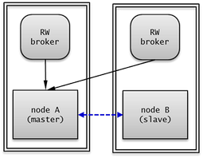You can configure each node in the basic structure of HA as shown below:
node A (master node)
Configure the ha_mode of the cubrid.conf file to on.
ha_mode=on
The following example shows how to configure cubrid_ha.conf:
ha_port_id=59901 ha_node_list=cubrid@nodeA:nodeB ha_db_list=testdb
node B (slave node): Configure this node in the same manner as node A.
For the databases.txt file of a broker node, it is necessary to configure the list of hosts configured as HA in db-host according to their priority. The following example shows the databases.txt file.
#db-name vol-path db-host log-path lob-base-path
testdb /home/cubrid/DB/testdb nodeA:nodeB /home/cubrid/DB/testdb/log file:/home/cubrid/DB/testdb/lob
The cubrid_broker.conf file can be set in a variety of ways according to configuration of the broker. It can also be configured as separate equipment with the databases.txt file.
The example below shows that the RW broker is set in each node, and node A and node B have the same value.
[%RW_broker]
...
# Broker mode setting parameter
ACCESS_MODE =RW
Connection Configuration of Applications
See JDBC Configuration, CCI Configuration, and PHP Configuration in Environment Configuration.
Remark
The moving path of a transaction log in these configurations is as follows:
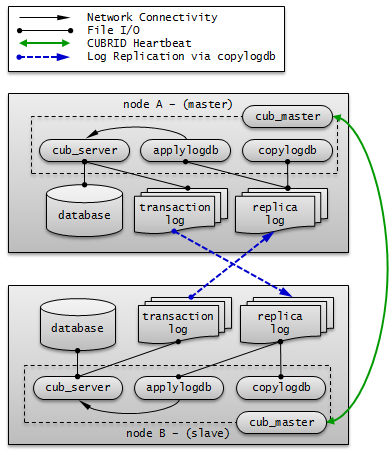Multiple-Slave Node Structure¶
In multiple-slave node structure, there is one master node and several slave nodes to improve the service availability of CUBRID.
Because replication log copy process and replication log reflection process are running at all nodes in the CUBRID HA group, a load of copying replication log occurs. Therefore, all nodes in the CUBRID HA group have high network and disk usage.
Because there are many nodes with HA enabled, read and write services never fail as long as a single node is alive.
In the multiple-slave node structure, the node becoming a master node when failover occurs is determined by the order specified in ha_node_list. If the value of ha_node_list is node1:node2:node3 and the master node is node A, node B will become a new master node when the master node fails.
An Example of Node Configuration
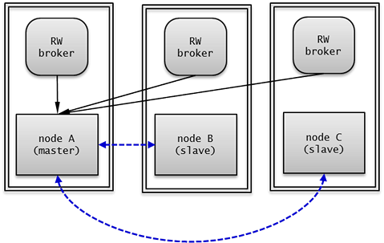You can configure each node in the basic structure of HA as shown below:
node A (master node)
Configure the ha_mode of the cubrid.conf file to on.
ha_mode=on
The following example shows how to configure cubrid_ha.conf:
ha_port_id=59901 ha_node_list=cubrid@nodeA:nodeB:nodeC ha_db_list=testdb ha_copy_sync_mode=sync:sync:sync
node B, node C (slave node): Configure this node in the same manner as node A.
You must enter the list of hosts configured in HA in order of priority in the databases.txt file of a broker node. The following is an example of the databases.txt file.
#db-name vol-path db-host log-path lob-base-path
testdb /home/cubrid/DB/testdb nodeA:nodeB:nodeC /home/cubrid/DB/testdb/log file:/home/cubrid/DB/testdb/lob
The cubrid_broker.conf file can be set in a variety of ways according to configuration of the broker. It can also be configured as separate equipment with the databases.txt file. In this example, the RW broker is configured in node A, node B, and node C.
The following is an example of the databases.txt file in node A, node B, and node C.
[%RW_broker]
...
# Broker mode setting parameter
ACCESS_MODE =RW
Connection Configuration of Applications
Connect the application to access to the broker of node A, node B, or node C.
Connection connection = DriverManager.getConnection(
"jdbc:CUBRID:nodeA:33000:testdb:::?charSet=utf-8&altHosts=nodeB:33000,nodeC:33000", "dba", "");
For details, see JDBC Configuration, CCI Configuration, and PHP Configuration in Environment Configuration.
Note
The data in the CUBRID HA group may lose integrity when there are multiple failures in this structure and the example is shown below.
- n a situation where a failover occurs in the first slave node while replication in the second slave node is being delayed due to restart
- In a situation where a failover re-occurs before replication reflection of a new master node is not complete due to frequent failover
In addition, if the mode of replication log copy process is ASYNC, the data in the CUBRID HA group may lose integrity.
If the data in the CUBRID HA group loses integrity for any of the reasons above, all data in the CUBRID HA group should be fixed as the same by using Building Replication or Rebuilding Replication Script.
Remark
The moving path of a transaction log in these configurations is as follows:
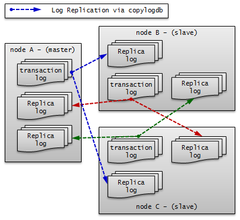Load Balancing Structure¶
The load balancing structure increases the availability of the CUBRID service by placing several nodes in the HA configuration (one master node and one slave node) and distributes read-load.
Because the replica nodes receive replication logs from the master node in the HA configuration and maintain the same data, and because the master node in the HA configuration does not receive replication logs from the replica nodes, its network and disk usage rate is lower than that of the multiple-slave structure.
Because replica nodes are not included in the HA structure, they provide read service without failover, even when all other nodes in the HA structure fail.
An Example of Node Configuration
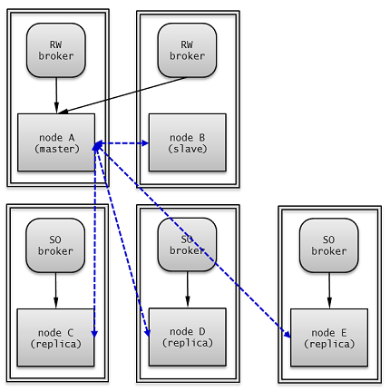You can configure each node in load balancing structure as shown below:
node A (master node)
Configure the ha_mode of the cubrid.conf file to on.
ha_mode=on
The following example shows how to configure cubrid_ha.conf:
ha_port_id=59901 ha_node_list=cubrid@nodeA:nodeB ha_replica_list=cubrid@nodeC:nodeD:nodeE ha_db_list=testdb ha_copy_sync_mode=sync:sync
node B (slave node): Configure this node in the same manner as node A.
node C, node D, node E (replica node)
Configure the ha_mode of the cubrid.conf file to replica.
ha_mode=replica
You can configure the cubrid_ha.conf file in the same manner as node A.
The cubrid_broker.conf can be set in a variety of ways according to configuration of the broker. It can also be configured as separate equipment with the databases.txt file.
In this example, broker and DB server exist on the same machine; the RW broker is configured in node A and node B; the SO broker with “CONNECT_ORDER=RANDOM” and “PREFERRED_HOSTS=localhost” is configured in node C, node D and node E. each of node C, node D or node E tries to connect to local DB server first because they are set as “PREFERRED_HOSTS=localhost”. When it is failed to connect to localhost, it tries to connect to one of db-hosts in databases.txt randomly because they are set as “CONNECT_ORDER=RANDOM”.
The following is an example of cubrid_broker.conf in node A and node B.
[%RW_broker]
...
# Broker mode setting parameter
ACCESS_MODE =RW
The following is an example cubrid_broker.conf in node C, node D and node E.
[%PHRO_broker]
...
# Broker mode setting parameter
ACCESS_MODE =SO
PREFERRED_HOSTS =localhost
You must enter the list of DB server hosts in the order so that each broker can be connected appropriate HA or load balancing server in the databases.txt file of a broker node.
The following is an example of the databases.txt file in node A and node B.
#db-name vol-path db-host log-path lob-base-path
testdb /home/cubrid/DB/testdb nodeA:nodeB /home/cubrid/DB/testdb/log file:/home/cubrid/CUBRID/testdb/lob
The following is an example of the databases.txt file in node C, node D and node E.
#db-name vol-path db-host log-path lob-base-path
testdb /home/cubrid/DB/testdb nodeC:nodeD:nodeE /home/cubrid/DB/testdb/log file:/home/cubrid/CUBRID/testdb/lob
Connection Configuration of Applications
Connect the application to access in read/write mode to the broker of node A or node B. The following is an example of a JDBC application.
Connection connection = DriverManager.getConnection(
"jdbc:CUBRID:nodeA:33000:testdb:::?charSet=utf-8&altHosts=nodeB:33000", "dba", "");
Connect the application to access in read-only mode to the broker of node C, node D or node E. The following is an example of a JDBC application. Configure “loadBalance=true” on the URL to connect randomly to the main host and hosts which are specified by altHosts.
Connection connection = DriverManager.getConnection(
"jdbc:CUBRID:nodeC:33000:testdb:::?charSet=utf-8&loadBalance=true&altHosts=nodeD:33000,nodeE:33000", "dba", "");
For details, see JDBC Configuration, CCI Configuration, and PHP Configuration in Environment Configuration.
Remark
The path of a transaction log in these configurations is as follows:
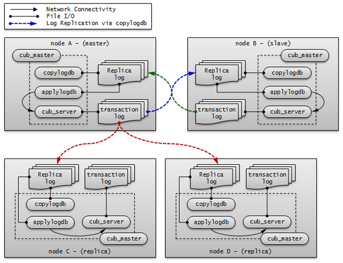Multiple-Standby Server Structure¶
Although its node structure has a single master node and a single slave node, many slave nodes from different services are physically configured in a single server.
This structure is for very small services in which the reading load of slave nodes is light. It is strictly for the availability of the CUBRID service. For this reason, when a master node that failed after a failover has been restored, the load must be moved back to the original master node to minimize the load of the server with multiple-slave nodes.
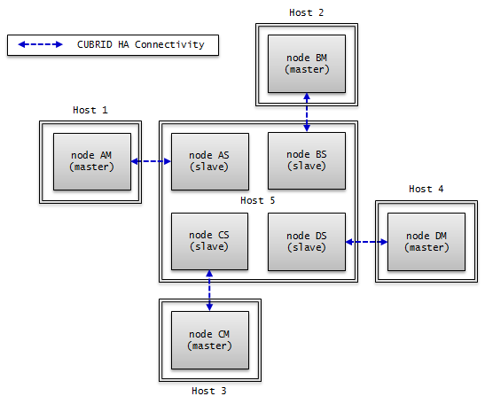An Example of Node Configuration
You can configure each node in the basic structure of HA as shown below:
node AM, node AS : Configure them in the same manner.
Configure the ha_mode of the cubrid.conf file to on.
ha_mode=on
The following example shows how to configure cubrid_ha.conf.
ha_port_id=10000 ha_node_list=cubridA@Host1:Host5 ha_db_list=testdbA1,testdbA2 ha_copy_sync_mode=sync:sync
node BM, node BS : Configure them in the same manner.
Configure the ha_mode of the cubrid.conf file to on.
ha_mode=on
The following example shows how to configure cubrid_ha.conf.
ha_port_id=10001 ha_node_list=cubridB@Host2:Host5 ha_db_list=testdbB1,testdbB2 ha_copy_sync_mode=sync:sync
node CM, node CS : Configure them in the same manner.
Configure the ha_mode of the cubrid.conf file to on.
ha_mode=on
The following example shows how to configure cubrid_ha.conf.
ha_port_id=10002 ha_node_list=cubridC@Host3:Host5 ha_db_list=testdbC1,testdbC2 ha_copy_sync_mode=sync:sync
node DM, node DS : Configure them in the same manner.
Configure the ha_mode of the cubrid.conf file to on.
ha_mode=on
The following is an example of the cubrid_ha.conf configuration.
ha_port_id=10003 ha_node_list=cubridD@Host4:Host5 ha_db_list=testdbD1,testdbD2 ha_copy_sync_mode=sync:sync
HA Constraints¶
Supported Platforms
Currently, CUBRID HA is supported by Linux only. All nodes within CUBRID HA groups must be configured on the same platforms.
Table Primary Key
CUBRID HA synchronizes data among nodes with the following method (as known as transaction log shipping): It replicates the primary key-based replication logs generated from the server of a master node to a slave node and then reflects the replication logs to the slave node.
If data of the specific table within CUBRID HA groups is not synchronized, you should check whether the appropriate primary key has specified for the table.
On the partitioned table, the table which has promoted some partitions by the PROMOTE statement replicates all data to the slave. However, since the table does not have the primary key, the data changes on the table made by the master are not applied to the slave.
Note
The data replication of tables without a primary key is supported by USE_SBR hint. For more information, see Using SQL Hint.
Java Stored Procedure
Because using java stored procedures in CUBRID HA cannot be replicated, java stored procedures should be configured to all nodes. For more details, see Configuring for CUBRID Java SP Server.
Method
CUBRID HA synchronizes data among nodes within CUBRID HA groups based on replication logs, So using method that does not generate replication logs may cause data inconsistency among nodes within CUBRID HA groups.
Therefore, in CUBRID HA environment, it is not recommended to use method. (e.g. CALL login(‘dba’, ‘’) ON CLASS dbuser;)
Standalone Mode
The replication logs are not generated as for tasks performed in standalone mode. For this reason, data inconsistency among nodes within CUBRID HA groups may occur when performing tasks in standalone mode.
Serial Cache
To enhance performance, a serial cache does not access Heap and does not generate replication logs when retrieving or updating serial information. Therefore, if you use a serial cache, the current values of serial caches will be inconsistent among the nodes within CUBRID HA groups.
cubrid backupdb -r
This command is used to back up a specified database. If the -r option is used, logs that are not required for recovery will be deleted. This deletion may result in data inconsistency among nodes within CUBRID HA groups. Therefore, you must not use the -r option.
On-line backup
If you want to perform on-line backup in HA environment, add @hostnameafter the database name. hostnameis a name defined in $CUBRID_DATABASES/databases.txt. Specify “@localhost” because you generally perform on-line backup on the local database.
cubrid backupdb -C -D ./ -l 0 -z testdb@localhost
Backup during running database may occur disk I/O load. Therefore, it is recommended to run backup on slave DB than master DB.
INCR/DECR Functions
If you use INCR / DECR (click counter functions) in a slave node of HA configuration, an error is returned.
LOB (BLOB/CLOB) Type
In a CUBRID HA environment, the meta data (Locator) of a LOB column is replicated and LOB data is not replicated. Therefore, if storage of a LOB type is located on the local machine, no tasks corresponding to columns are allowed in slave nodes or master nodes after failover.
Note
On previous version of CUBRID 9.1, using triggers in CUBRID HA can cause duplicate executions. This may cause data inconsistency among nodes within CUBRID HA groups. Therefore, you should not use triggers on the previous version of 9.1.
Note
UPDATE STATISTICS
From 10.0, UPDATE STATISTICS statement is replicated.
In the previous version of 10.0, UPDATE STATISTICS statement is not replicated; therefore, as a separated operation, you should run this statement in the slave/replica node. When you want to apply UPDATE STATISTICS on the slave/replica node in the previous version of 10.0, you should run this in the CSQL with –sysadm and –write_on_slave options.
Operational Scenarios¶
Operation Scenario during Read/Write Service¶
The operation scenario written in this page is not affected by read/write services. Therefore, its impact on the services caused by CUBRID operation is very limited. There can be two types of operation scenarios in which failover occurs or it does not occur.
When Failover Does Not Occur
You can perform the following operations without stopping and restarting nodes in CUBRID HA groups.
| General Operation | Scenario | Consideration |
|---|---|---|
| Online Backup | Operation task is performed at each master node and slave node each during operation. | Note that there may be a delay in the transaction of master node due to the operation task. |
| Schema change (excluding basic key change), index change, authorization change | When an operation task occurs at a master node, it is automatically replication reflected to a slave node. | Because replication log is copied and reflected to a slave node after an operation task is completed in a master node, operation task time is doubled. Changing schema must be processed without any failover. Index change and authority change other than the schema change can be performed by stopping each node and executing standalone mode (ex: the -S option of the csql utility) when the operation time is important. |
| Add volume | Operation task is performed at each DB regardless of HA structure. | Note that there may be a delay in the transaction of master node due to the operation task. If operation task time is an issue, operation task can be performed by stopping each node and executing standalone mode (ex: the -S of the cubrid addvoldb utility). |
| Failure node server replacement | It can be replaced without restarting the CUBRID HA group when a failure occurs. | The failure node must be registered in the ha_node_list of CUBRID HA group, and the node name must not be changed during replacement. |
| Failure broker server replacement | It can be replaced without restarting the broker when a failure occurs. | The connection to a broker replaced at a client can be made by rcTime which is configured in URL string. |
| DB server expansion | You can execute cubrid heartbeat reload in each node after configuration change (ha_node_list, ha_replica_list) without restarting the previously configured CUBRID HA group. | Starts or stops the copylogdb/applylogdb processes which were added or deleted by loading changed configuration information. |
| Broker server expansion | Run additional brokers without restarting existing brokers. | Modify the URL string to connect to a broker where a client is added. |
When Failover Occurs
You must stop nodes in CUBRID HA group and complete operation before performing the following operations.
| General Operation | Scenario | Consideration |
|---|---|---|
| DB server configuration change | A node whose configuration is changed is restarted when the configuration in cubrid.conf is changed. | |
| Change broker configuration, add broker , and delete broker | A broker whose configuration is changed is restarted when the configuration in cubrid_broker.conf is changed. | |
| DBMS version patch | Restart nodes and brokers in HA group after version patch. | Version patch means there is no change in the internal protocol, volume, and log of CUBRID. |
Operation Scenario during Read Service¶
The operation scenario written in this page is only applied to read service. It is required to allow read service only or dynamically change mode configuration of broker to Read Only. There can be two types of operation scenarios in which failover occurs or it does not occur.
When Failover Does Not Occur
You can perform the following operations without stopping and restarting nodes in CUBRID HA groups.
| General Operation | Scenario | Consideration |
|---|---|---|
| Schema change (primary key change) | When an operation task is performed at the master node, it is automatically reflected to the slave node. | In order to change the primary key, the existing key must be deleted and a new one added. For this reason, replication reflection may not occur due to the HA internal structure which reflects primary key-based replication logs. Therefore, operation tasks must be performed during the read service. |
| Schema change (excluding basic key change), index change, authorization change | When an operation task is performed at the master node, it is automatically reflected to the slave node. | Because replication log is copied and reflected to a slave node after an operation task is completed in a master node, operation task time is doubled. Changing schema must be processed without any failover. Index change and authority change other than the schema change can be performed by stopping each node and executing standalone mode(ex: the span class=”nkeyword”>-S option of csql) when the operation time is important. |
When Failover Occurs
You must stop nodes in CUBRID HA group and complete operation before performing the following operations.
| General Operation | Scenario | Consideration |
|---|---|---|
| DBMS version upgrade | Restart each node and broker in the CUBRID HA group after they are upgraded. | A version upgrade means that there have been changed in the internal protocol, volume, or log of CUBRID. Because there are two different versions of the protocols, volumes, and logs of a broker and server during an upgrade, an operation task must be performed to make sure that each client and broker (before/after upgrade) are connected to the corresponding counterpart in the same version. |
| Massive data processing (INSERT/UPDATE/DELETE) | Stop the node that must be changed, perform an operation task, and then execute the node. | This processes massive data that cannot be segmented. |
Operation Scenario after Stopping a Service¶
You must stop all nodes in CUBRID HA group before performing the following operation.
| General Operation | Scenario | Consideration |
|---|---|---|
| Changing the host name and IP of a DB server | Stop all nodes in the CUBRID HA group, and restart them after the operation task. | When a host name has been changed, change the databases.txt file of each broker and reset the broker connection with cubrid broker reset. |
Setting Replica Replication Delay¶
This scenario delays the replication of the master node data in replica node, and stops the replication of the master node data at the specific time, to detect the case which someone deleted the data by mistake and stop the replication at the specified time.
| General Operation | Scenario | Consideration |
|---|---|---|
| Setting the delay of replication in replica node | Specify the term of replicated delay to replica node, and let the replication stop on the specified time | specify ha_replica_delay and ha_replica_time_bound in cubrid.conf |
Building Replication¶
restoreslave¶
cubrid restoreslave is the same as cubrid restoredb which restores a database from a backup but it includes several convenient features when rebuilding a slave or a replica. With cubrid restoreslave, user does not need to manually collect replication-related information from a backup output to create a replication catalog which is stored in db_ha_apply_info. It automatically reads any necessary information from a backup image and an active log and then it adds the relevant replication catalog into db_ha_apply_info. All you need to do is to provide two mandatory options: the state of the node where the backup image was created, and the hostname of the current master node. Please also refer restoredb for more details.
cubrid restoreslave [OPTION] database-name
-
-s,--source-state=STATE¶ You need to specify the state of the node where the backup image was created. STATE may be ‘master’, ‘slave’, or ‘replica’
-
-m,--master-host-name=NAME¶ You need to specify the hostname of the current master node.
-
--list¶ This option displays information on backup files of a database; restoration procedure is not performed. For further information, see –list of restoredb
-
-B,--backup-file-path=PATH¶ You can specify the directory where backup files are to be located by using the -B option. For further information, see -B of restoredb
-
-o,--output-file=FILE¶ You can specify a filename to store output messages. For further information, see -o of restoredb
Example Scenarios of Building Replication¶
In this section, we will see various scenarios regarding adding a new node or removing a node during HA service.
Note
- Please note that only tables which have a primary key can be replicated.
- Please note that volume paths between a master node and a slave (or replica) node must be the same.
- A node includes replication processing information for all other nodes. For example, let’s consider HA architecture with a master nodeA, and two slaves nodeB and nodeC. nodeA has the replication process information for nodeB and nodeC; nodeB has information for nodeB and nodeC; nodeC has information for nodeA and nodeC.
- Under the assumption of no failover, add a new node. If failover occurs during building replication, it is recommended to rebuild replication from the beginning.
Add a Slave after Stopping a Service
Add a new slave node after the service stops when operating a database with only a machine.
Build Another Slave during HA Service
Add a new slave using the existing slave node in the HA environment which one master and one slave are built.
-
Remove a slave when one master and two slaves are built.
-
Add a new replica node using the existing slave in the environment which a master and a slave are built.
Rebuild a Slave during Service
Rebuild the slave using the existing master in the environment which a master, a slave and a replica are built. A new information should be updated by a user in the db_ha_apply_info catalog table.
Now let’s see in detail about the above scenarios.
When you want to rebuild only the abnormal node in the HA environment, see Rebuilding Replication Script.
Note
During building a replication, please note that added or rebuilt node’s replication information and replication logs should be updated or removed when you add, rebuild or remove a certain node. Replication information is saved on the db_ha_apply_info table, and it has other nodes’ replication process information.
However, because role change does not occur in a replica node, the other node is not required to have replication information and a replication logs about the replica node. On the other hand, the replica node has all information about a master and a slave.
When you run a scenario of Rebuild a Slave during Service, you should update db_ha_apply_info’s information directly.
When you run a scenario of Add a Slave after Stopping a Service, a slave is newly built; therefore, you can use the automatically added information.
When you run a a scenario of Build Another Slave during HA Service or Add a Replica during Service, backed-up database from the existing slave is used; you can use as it exists because master’s db_ha_apply_info information is included in the existing slave.
When you run a scenario of Remove a Slave during Service, you must remove replication information about a removed slave. However, this information does not make a problem even if this is left.
Add a Slave after Stopping a Service¶
Now let’s see the case of building a new slave node with a single master node - making a 1:1 master-slave composition.
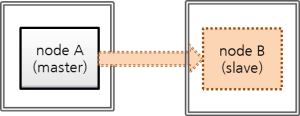- nodeA: a master node’s host name
- nodeB: a slave node’s host name to be added newly
This scenario assumes that the database has been created by below commands. When you run createdb, a locale name and a charset should be the same between a master node and a slave node.
export CUBRID_DATABASES=/home/cubrid/DB
mkdir $CUBRID_DATABASES/testdb
mkdir $CUBRID_DATABASES/testdb/log
cd $CUBRID_DATABASES/testdb
cubrid createdb testdb -L $CUBRID_DATABASES/testdb/log en_US.utf8
The backup file is saved in the $CUBRID_DATABASES/testdb directory by default if the location is not specified.
URL’s change in an application is not required if a broker node is composed of a separated machine and if adding a new broker is not considered.
Note
If a broker’s machine is not separated from a database’s, to prepare a fault of a master node’s machine, broker’s access on a slave machine should be possible, too. To do this, altHosts should be added on an application’s access URL and databases.txt’s configuration should be changed for broker duplexing.
For broker’s configuration on HA environment, see cubrid_broker.conf.
In this scenario, we assume that broker’s node is not installed on a separated machine.
With the above in mind, let’s work as follows.
Configure HA of master node and slave node.
Set the $CUBRID/conf/cubrid.conf identically on master and slave nodes.
[service] service=server,broker,manager # Add the database name to run when starting the service server=testdb [common] ... # Add when configuring the HA (Logging parameters) force_remove_log_archives=no # Add when configuring the HA (HA mode) ha_mode=on
Set the $CUBRID/conf/cubrid_ha.conf identically on master and slave nodes.
[common] ha_port_id=59901 # cubrid is a group name of HA system, nodeA and nodeB are host names. ha_node_list=cubrid@nodeA:nodeB ha_db_list=testdb ha_copy_sync_mode=sync:sync ha_apply_max_mem_size=500
Set the $CUBRID_DATABASES/databases.txt identically on master and slave nodes.
#db-name vol-path db-host log-path lob-base-path testdb /home/cubrid/DB/testdb nodeA:nodeB /home/cubrid/DB/testdb/log file:/home/cubrid/DB/testdb/lob
Set brokers and applications in HA environment.
For broker setting and adding altHosts into URL, see cubrid_broker.conf.
Set locale library identically on master and slave nodes.
[nodeA]$ scp $CUBRID/conf/cubrid_locales.txt cubrid_usr@nodeB:$CUBRID/conf/. [nodeB]$ make_locale.sh -t64
Create a directory to a slave node.
[nodeB]$ cd $CUBRID_DATABASES [nodeB]$ mkdir testdb
Create a log directory to a slave node. (create this on the same path with a master node.)
[nodeB]$ cd $CUBRID_DATABASES/testdb [nodeB]$ mkdir log
Stop a master node, backup a master database.
[nodeA]$ cubrid service stop
Back up the database of the master node and copy the backup file to the slave node.
If the location where the backup file will be saved in the master node is not specified, the location is set as the log directory of testdb by default. Copy the backup file to the same location in the slave node. testdb_bk0v000 is the backup volume file and testdb_bkvinf is the backup volume information file.
[nodeA]$ cubrid backupdb -z -S testdb Backup Volume Label: Level: 0, Unit: 0, Database testdb, Backup Time: Thu Apr 19 16:05:18 2012 [nodeA]$ cd $CUBRID_DATABASES/testdb/log [nodeA]$ scp testdb_bk* cubrid_usr@nodeB:$CUBRID_DATABASES/testdb/log cubrid_usr@nodeB's password: testdb_bk0v000 100% 6157KB 6.0MB/s 00:00 testdb_bkvinf 100% 66 0.1KB/s 00:00
Restore a database from a slave node.
Restore the database in the slave node. At this time, the volume path of the master node must be identical to that of the slave node.
[nodeB]$ cubrid restoredb -B $CUBRID_DATABASES/testdb/log demodb
Start a master node, start a slave node.
[nodeA]$ cubrid heartbeat start
After confirming that the master node has been started, start the slave node.
If nodeA’s state is changed from registered_and_to_be_active to registered_and_active, it means that the master node has been successfully started.
[nodeA]$ cubrid heartbeat status @ cubrid heartbeat status HA-Node Info (current nodeA, state master) Node nodeB (priority 2, state unknown) Node nodeA (priority 1, state master) HA-Process Info (master 123, state master) Applylogdb testdb@localhost:/home1/cubrid/DB/tdb01_nodeB (pid 234, state registered) Copylogdb testdb@nodeB:/home1/cubrid/DB/tdb01_nodeB (pid 345, state registered) Server tdb01 (pid 456, state registered_and_to_be_active) [nodeB]$ cubrid heartbeat start
Confirm that the HA configurations of the master node and the slave node are successfully running
[nodeA]$ csql -u dba testdb@localhost -c"create table tbl(i int primary key);insert into tbl values (1),(2),(3)" [nodeB]$ csql -u dba testdb@localhost -c"select * from tbl" i ============= 1 2 3
Build Another Slave during HA Service¶
The following is a scenario to add a new slave from an existing slave during a HA service. “Master:Slave” will be from 1:1 to 1:2.
- nodeA: a master node’s host name
- nodeB: a slave node’s host name
- nodeC: a slave node’s host name to be added
You can use an existing master or slave if you want to add a new slave during HA service. In this scenario, let’s add a new slave by using an existing slave because we assume that slave’s disk I/O is less than master’s.
Note
Why possible to use a slave instead of a master when adding a node
The reason to use a slave instead of a master is that master’s transaction log (active log + archive log) is replicated to a slave as it is, and master node’s transaction logs and slave node’s replication logs (replicated transaction logs) are the same in format and content.
Note
Build an initial database
It assumes that the database is already created with the below command. a locale name and a charset should be the same between a master and a slave when you run “createdb”.
export CUBRID_DATABASES=/home/cubrid/DB
mkdir $CUBRID_DATABASES/testdb
mkdir $CUBRID_DATABASES/testdb/log
cd $CUBRID_DATABASES/testdb
cubrid createdb testdb -L $CUBRID_DATABASES/testdb/log en_US.utf8
At this time, if you don’t specify backup files’ saving path as an option, backup files are saved on the log directory specified in databases.txt.
HA configuration of nodeC
Set $CUBRID/conf/cubrid.conf of nodeC identically with nodeB’s.
“force_remove_log_archives=no” should be set not to let no-replicated logs be deleted during HA service.
[service] service=server,broker,manager [common] ... # Add when configuring the HA (Logging parameters) force_remove_log_archives=no # Add when configuring the HA (HA mode) ha_mode=on
Set $CUBRID/conf/cubrid_ha.conf of nodeC identically with nodeB’s.
However, add nodeC into ha_node_list, and add one more “sync” into ha_copy_sync_mode.
[common] ha_port_id=59901 # cubrid is a group name of HA system, nodeA, nodeB, and nodeC are host names. ha_node_list=cubrid@nodeA:nodeB:nodeC ha_db_list=testdb ha_copy_sync_mode=sync:sync:sync ha_apply_max_mem_size=500
Set a locale library of nodeC identically with that of nodeA or nodeB.
[nodeB]$ scp $CUBRID/conf/cubrid_locales.txt cubrid_usr@nodeC:$CUBRID/conf/. [nodeC]$ make_locale.sh -t64
Add nodeA, nodeB, and nodeC into db-host of $CUBRID_DATABASES/databases.txt in nodeC.
#db-name vol-path db-host log-path lob-base-path testdb /home/cubrid/DB/testdb nodeA:nodeB:nodeC /home/cubrid/DB/testdb/log file:/home/cubrid/DB/testdb/lob
db-host of databases.txt is related to the access order to the database server by a broker; therefore, you can change the value as you want. For example, you can write only nodeA:nodeB or localhost into db-host. However, by considering the local machine access, (e.g. csql -u dba testdb@localhost) you should add at least localhost or the name of localhost into db-host.
Apply configuration for preventing from deleting replication logs of nodeB during restoring after backup
Replication logs of nodeB can be added if service continues after restoring a database from the nodeB backup file to nodeC. By the way, slave’s replication logs can be deleted before being copied to nodeC by configuration. To prevent this case, you can configure system parameters as follows.
Change the value of ha_copy_log_max_archives bigger without restarting nodeB’s database.
From backup of nodeB, transactions which have been executed after backup of nodeB should be kept; then transactions after backup can be applied to nodeC.
Therefore, added replication logs of nodeB after backup should be kept.
Here, let’s assume the number of replication logs as 5, which can sufficiently save executed transactions during building nodeC.
Edit $CUBRID/conf/cubrid_ha.conf
ha_copy_log_max_archives=5
Apply the change of the parameter ha_copy_log_max_archives to the applylogdb process of nodeB.
[nodeB]$ cubrid heartbeat applylogdb stop testdb nodeA [nodeB]$ cubrid heartbeat applylogdb start testdb nodeA
Note
If you build nodeC with only nodeA, a master node, to change the value of ha_copy_log_max_archives from nodeB is needless because copying replication logs from nodeB is needless.
Instead, you should apply the changed log_max_archives to nodeA.
The value of log_max_archives parameter of cubrid.conf can be changed during service by using “SET SYSTEM PARAMETERS” syntax.
[nodeA]$ csql -u dba -c "SET SYSTEM PARAMETERS 'log_max_archives=5'" testdb@localhost
Backup from nodeB, restore into nodeC
Backup a database from nodeB.
[nodeB]$ cd $CUBRID_DATABASES/testdb/log [nodeB]$ cubrid backupdb --sleep-msecs=10 -C -o output.txt testdb@localhost
Note
–sleep-msecs is an option to set the rest time in each cycle when 1MB is written in a backup file.The unit is millisecond. Consider setting this option if the disk I/O overhead of a machine to back up is severe; however, it is recommended to set this value as small as possible and do backup when backup overhead is small enough because if this value is bigger, backup time takes longer.
If there is no I/O overhead on nodeB, you can omit this option.
On the file specified in -o option, the backup result information is written.
Copy backup files to nodeC.
[nodeB]$ cd $CUBRID_DATABASES/testdb/log [nodeB]$ scp -l 131072 testdb_bk* cubrid_usr@nodeC:$CUBRID_DATABASES/testdb/log
Note
scp command’s -l option is an option to control the amount of copying file; when you copy files between nodes, use this value properly as considering I/O overhead. The unit is Kbits. 131072 is 16MB.
Restore the database into nodeC.
At this time, the volume path of the slave must be the same with the master.
[nodeC]$ cubrid restoredb -B $CUBRID_DATABASES/testdb/log testdb
Copy the active log of nodeA into nodeC
In nodeA’s active log, there exists a number information of the archive log which is recently created. This information is needed for archive logs, which has been created after the time in which the active log had been copied, to be automatically copied by copylogdb process after the start of HA service of nodeC; therefore, the user just needs to manually copy archive logs which has been created before copying an active log.
Start cub_master which manages HA connection in nodeC.
[nodeC]$ cub_master
Start copylogdb process for nodeA.
[nodeC]$ cubrid heartbeat copylogdb start testdb nodeA
Check if nodeA’s active log was copied.
To copy the current active log means to obtain the number information of the last archive log. Archive logs after this time are automatically copied after the process [5. Start HA server in nodeC].
[nodeC]$ cd $CUBRID_DATABASES/testdb_nodeA [nodeC]$ ls testdb_lgar_t testdb_lgat testdb_lgat__lock
Stop copylogdb process for nodeA on nodeC.
[nodeC]$ cubrid heartbeat copylogdb stop testdb nodeA
Stop cub_master of nodeC.
[nodeC]$ cubrid service stop
Copy required log files after restoring a database into nodeC
Copy all replicated archive logs of nodeB into nodeC.
[nodeC]$ cd $CUBRID_DATABASES/testdb_nodeA [nodeC]$ scp -l 131072 cubrid@nodeB:$CUBRID_DATABASES/testdb_nodeA/testdb_lgar0* .
In this process, please note that all replicated archive logs which are required for replication should exist.
Note
scp command’s -l option is an option to control the amount of copying file; when you copy files between nodes, use this value properly as considering I/O overhead. The unit is Kbits. 131072 is 16MB.
Note
Copy files of which the names end with a number. Here, we copied with “testdb_lgar0*” because numbers of names of all replication log files are started with 0.
Note
Preparation plan when the required replication logs are already deleted
Replication logs which are created between backup time and active log creation time can be deleted if the value of ha_copy_log_max_archives is not large enough; in this case, an error can occur when running the below process, [5. Start HA service on nodeC].
When an error occurs, start HA service of nodeC by adding archive logs in master if the required logs exist in master node. For example, you can copy an archive log #1 from master if there are archive logs #1, #2, and #3 in master; and there are only replicated archive logs #2, and #3 in slave and #1 is required additionally. However, the case in which master’s archive log files are left more can happen only when the value of log_max_archives of master is big enough.
If there is no wanted number’s archive log in master’s archive logs, change the value of ha_copy_log_max_archives big enough and do backup-and-restore procedure from the beginning.
Note
Check if required replication logs are deleted
You can check if requried replication logs are deleted or not by watching the testdb_lginf file.
- If this is the case of restoring a database from a slave backup file, you can check what pages are required, from the page of master by watching the value of required_lsa_pageid in the db_ha_apply_info catalog table.
- Watch the contents of the testdb_lginf file located in $CUBRID_DATABASES/testdb/log directory from bottom to top.
Time: 03/16/15 17:44:23.767 - COMMENT: CUBRID/LogInfo for database /home/cubrid/DB/databases/testdb/testdb Time: 03/16/15 17:44:23.767 - ACTIVE: /home/cubrid/DB/databases/testdb/log/testdb_lgat 1280 pages Time: 03/16/15 17:54:40.892 - ARCHIVE: 0 /home/cubrid/DB/databases/testdb/log/testdb_lgar000 0 1277 Time: 03/16/15 17:57:29.451 - COMMENT: Log archive /home/cubrid/DB/databases/testdb/log/testdb_lgar000 is not needed any longer unless a database media crash occurs. Time: 03/16/15 18:03:08.166 - ARCHIVE: 1 /home/cubrid/DB/databases/testdb/log/testdb_lgar001 1278 2555 Time: 03/16/15 18:03:08.167 - COMMENT: Log archive /home/cubrid/DB/databases/testdb/log/testdb_lgar000, which contains log pages before 2556, is not needed any longer by any HA utilities. Time: 03/16/15 18:03:29.378 - COMMENT: Log archive /home/cubrid/DB/databases/testdb/log/testdb_lgar001 is not needed any longer unless a database media crash occurs.
When the contents of testdb_lginf is written as the above, the last two numbers in “Time: 03/16/15 17:54:40.892 - ARCHIVE: 0 /home/cubrid/DB/databases/testdb/log/testdb_lgar000 0 1277” are the start and end IDs of pages which this file store.
For example, if the page ID at backup is 2300, we can see this ID is between no. 1278 and no. 2555 by watching “testdb_lgar001 1278 2555”; therefore, we can know that the archive logs of master (or replicated archive logs of slave) are required from no. 1 when restoring a database.
Start HA service on nodeC
[nodeC]$ cubrid heartbeat start
Change HA configuration of nodeA and nodeB
Turn back the value of ha_copy_log_max_archive of nodeB.
[nodeB]$ vi cubrid_ha.conf ha_copy_log_max_archives=1
Apply the changed value of ha_copy_log_max_archives to the applylogdb process of nodeB.
[nodeB]$ cubrid heartbeat applylogdb stop testdb nodeA [nodeB]$ cubrid heartbeat applylogdb start testdb nodeA
In cubrid_ha.conf, add nodeC into ha_node_list, and add one “sync” more to nodeA and nodeB.
$ cd $CUBRID/conf $ vi cubrid_ha.conf ha_node_list=cubrid@nodeA:nodeB:nodeC ha_copy_sync_mode=sync:sync:sync
Apply changed ha_node_list.
[nodeA]$ cubrid heartbeat reload [nodeB]$ cubrid heartbeat reload
Start coplylogdb and applylogdb for nodeC.
[nodeA]$ cubrid heartbeat repl start nodeC [nodeB]$ cubrid heartbeat repl start nodeC
Add a broker and add this broker’s host name into altHosts of application URL
Add a broker if needed, and add this broker’s host name into altHosts, the property of application URL to access this broker.
If you are not considering to add a broker, you do not need to do this job.
- From all of nodeA and nodeB, add nodeC into db-host of $CUBRID_DATABASES/databases.txt.
#db-name vol-path db-host log-path lob-base-path testdb /home/cubrid/DB/testdb nodeA:nodeB:nodeC /home/cubrid/DB/testdb/log file:/home/cubrid/DB/testdb/lob
db-host of databases.txt is a configuration parameter related to the order of access from a broker to database servers; therefore, you can change as you want.For example, you can write only “nodeA:nodeB” or “localhost” into db-host. However, if you access database from a local machine (e.g. csql -u dba testdb@localhost), you should include “localhost” or the localhost name into db-host.
Remove a Slave during Service¶
Let’s remove a slave when the HA environment is composed of “master:slave = 1:2”.
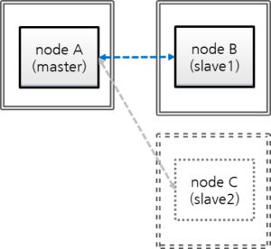- nodeA: a master node’s host name
- nodeB: a slave node’s host name
- nodeC: a slave node’s host name to be removed
Stop the service of nodeC
$ cubrid heartbeat stop # Processes related to heartbeat (applylogdb, copylogdb, cub_server) are stopped. $ cubrid service stop # Processes such as cub_master, cub_broker, and cub_manager are stopped.
Remove nodeC from the configuration of nodeA, and nodeB
Remove nodeC in ha_node_list from cubrid_ha.conf of nodeA and nodeB; remove one “sync” in ha_copy_sync_mode.
$ vi cubrid_ha.conf ha_node_list=cubrid@nodeA:nodeB ha_copy_sync_mode=sync:syncApply the changed ha_node_list.
Run “reload” command at the master, nodeA.
[nodeA]$ cubrid heartbeat reloadRun “stop” and “start” commands at the slave, nodeB.
[nodeB]$ cubrid heartbeat stop [nodeB]$ cubrid heartbeat startStop coplylogdb and applylogdb for nodeC.
[nodeA]$ cubrid heartbeat repl stop nodeC [nodeB]$ cubrid heartbeat repl stop nodeCRemove replication logs about nodeC from nodeA and nodeB.
$ cd $CUBRID_DATABASES $ rm -rf testdb_nodeCRemove replication information about nodeC from nodeA and nodeB.
You can run DELELTE operation from a slave node only if you add –sysadm and –write-on-standby options on running csql.
$ csql -u dba --sysadm --write-on-standby testdb@localhost sysadm> DELETE FROM db_ha_apply_info WHERE copied_log_path='/home/cubrid/DB/databases/testdb_nodeC';copied_log_path is the path in which replication log files are stored.
Remove nodeC from broker’s configuration
Remove nodeC if this exists in db-host of databases.txt from nodeA and nodeB.
$ cd $CUBRID_DATABASES $ vi databases.txt #db-name vol-path db-host log-path lob-base-path testdb /home/cubrid/DB/testdb nodeA:nodeB /home/cubrid/DB/testdb/log file:/home/cubrid/DB/testdb/lob
Restart brokers of nodeA and nodeB.
$ cubrid broker restart
Note
You don’t need to hurry to restart these brokers because nodeC is already stopped and an application will not access the nodeC database. If you restart these brokers, you should consider that the applications connected to these brokers can be disconnected. Moreover, if multiple brokers with the same configuration exist, one broker can substitute others; therefore, restart a broker one by one.
For example, on the above, nodeA and nodeB are the same configuration; therefore, you can restart nodeB first then restart nodeA.
Add a Replica during Service¶
Now let’s add a replica when HA environment is set as “master:slave=1:1”. The beginning database setting is the same as the setting in Build an initial database of Build Another Slave during HA Service.
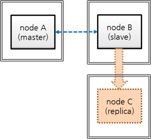- nodeA: a master node’s host name
- nodeB: a slave node’s host name
- nodeC: a replica node’s host name to be added newly
Configure HA parameter of nodeC
Set nodeC’s $CUBRID/conf/cubrid.conf as the same with nodeB except for ha_mode.
Set “ha_mode=replica”.
[service] service=server,broker,manager [common] # Add this when doing HA configuration (HA mode) ha_mode=replica
Note
Replica node’s transaction logs are not used to replication; therefore, whatever the value of force_remove_log_archives is set to, it works as yes.
Configure nodeC’s $CUBRID/conf/cubrid_ha.conf
Add nodeC into ha_replica_list.
[common] ha_port_id=59901 # cubrid is a group name of HA system, nodeA, nodeB, and nodeC are host names. ha_node_list=cubrid@nodeA:nodeB ha_replica_list=cubrid@nodeC ha_db_list=testdb ha_copy_sync_mode=sync:sync ha_apply_max_mem_size=500
Set a locale library of nodeC identically with that of nodeA or nodeB.
[nodeB]$ scp $CUBRID/conf/cubrid_locales.txt cubrid_usr@nodeC:$CUBRID/conf/. [nodeC]$ make_locale.sh -t64
Add nodeC into db-host of $CUBRID_DATABASES/databases.txt in nodeC.
#db-name vol-path db-host log-path lob-base-path testdb /home/cubrid/DB/testdb nodeC /home/cubrid/DB/testdb/log file:/home/cubrid/DB/testdb/lob
db-host of databases.txt is related to the access order to the database server by a broker; therefore, you can change the value as you want. For example, you can write only nodeA:nodeB or localhost into db-host. However, by considering the local machine access, (e.g. csql -u dba testdb@localhost) you should add at least localhost or the name of localhost into db-host.
Apply configuration for preventing from deleting replication logs of nodeB during restoring after backup
nodeB’s replication logs can be added after restoring if a service keeps going during restoring on nodeC after backup of nodeB; at this time, some replication logs which are needed for nodeC can be deleted by the configuration. To protect this, configure nodes as following.
Change the value of ha_copy_log_max_archives larger without restarting a database on nodeB.
To apply transactions after backup time to nodeC, transactions should be kept until the nodeC’s data which restore nodeB’s backup data become the same with master(nodeA)’s.
Therefore, nodeB’s replication logs which are added after backup should be kept.
Here, let’s assume the number of replication log files which can sufficiently store transactions executed during nodeC’s building as 5.
Edit $CUBRID/conf/cubrid_ha.conf
ha_copy_log_max_archives=5
Apply the change of ha_copy_log_max_archives to nodeB’s applylogdb process.
[nodeB]$ cubrid heartbeat applylogdb stop testdb nodeA [nodeB]$ cubrid heartbeat applylogdb start testdb nodeA
Note
If you build nodeC with nodeA, a master node only, copying replication logs from nodeB is not needed; therefore, changing the value of ha_copy_log_max_archives from nodeB is also needless.
Instead, it requires to apply a changed value of log_max_archives to nodeA.
The value of log_max_archives parameter in cubrid.conf can be changed during service with the “SET SYSTEM PARAMETERS” syntax.
[nodeA]$ csql -u dba -c "SET SYSTEM PARAMETERS 'log_max_archives=5'" testdb@localhost
Backup nocdB and restore on nodeC
Backup a database from nodeB.
[nodeB]$ cd $CUBRID_DATABASES/testdb/log [nodeB]$ cubrid backupdb --sleep-msecs=10 -C -o output.txt testdb@localhost
Note
Please refer to the explanation of –sleep-msecs within Build Another Slave during HA Service.
Copy backup files to nodeC.
[nodeB]$ cd $CUBRID_DATABASES/testdb/log [nodeB]$ scp -l 131072 testdb_bk* cubrid_usr@nodeC:$CUBRID_DATABASES/testdb/log
Note
scp command’s -l option is an option to control the amount of copying file; when you copy files between nodes, use this value properly as considering I/O overhead. The unit is Kbits. 131072 is 16MB.
Restore the database into nodeC.
At this time, volume paths between a master and a slave should be the same.
[nodeC]$ cubrid restoredb -B $CUBRID_DATABASES/testdb/log testdb
Copy nodeA’s active log to nodeC
In nodeA’s active log, there exists a number information of the archive log which is recently created. This information is needed for archive logs, which has been created after the time in which the active log had been copied, to be automatically copied by copylogdb process after the start of HA service of nodeC; therefore, the user just needs to manually copy archive logs which has been created before copying an active log.
Start cub_master, which manages HA connections, on nodeC.
[nodeC]$ cub_master
Start copylogdb process for nodeA.
[nodeC]$ cubrid heartbeat copylogdb start testdb nodeA
Check if nodeA’s active log was copied.
To copy the current active log means to obtain the number information of the last archive log. Archive logs after this time are automatically copied after the process [5. Start HA server in nodeC].
[nodeC]$ cd $CUBRID_DATABASES/testdb_nodeA [nodeC]$ ls testdb_lgar_t testdb_lgat testdb_lgat__lock
Stop copylogdb process for nodeA on nodeC.
[nodeC]$ cubrid heartbeat copylogdb stop testdb nodeA
Stop cub_master of nodeC.
[nodeC]$ cubrid service stop
Copy required log files after restoring a database into nodeC
Copy all replicated archive logs of nodeB into nodeC.
[nodeC]$ cd $CUBRID_DATABASES/testdb_nodeA [nodeC]$ scp -l 131072 cubrid@nodeB:$CUBRID_DATABASES/testdb_nodeA/testdb_lgar0* .
In this process, please note that all replicated archive logs which are required for replication should exist.
Note
scp command’s -l option is an option to control the amount of copying file; when you copy files between nodes, use this properly as considering I/O overhead. The unit is Kbits. 131072 is 16MB.
Note
Copy files of which the names end with a number. Here, we copied with “testdb_lgar0*” because numbers of the names of all replication log files are started with 0.
Note
Replication logs which are created between backup time and active log creation time can be deleted if the value of ha_copy_log_max_archives is not large enough; in this case, an error can occur when running the below process, [5. Start HA service on nodeC].
When an error occurs, take actions by referring to Preparation plan when the required replication logs are already deleted described on the above.
Start HA service on nodeC
[nodeC]$ cubrid heartbeat start
Change HA configuration of nodeA and nodeB
Turn back ha_copy_log_max_archive of nodeB.
[nodeB]$ vi cubrid_ha.conf ha_copy_log_max_archives=1
Apply the changed value of ha_copy_log_max_archives to the applylogdb process of nodeB.
[nodeB]$ cubrid heartbeat applylogdb stop testdb nodeA [nodeB]$ cubrid heartbeat applylogdb start testdb nodeA
In cubrid_ha.conf, add nodeC into ha_node_list, and add one “sync” more to nodeA and nodeB.
$ cd $CUBRID/conf $ vi cubrid_ha.conf ha_replica_list=cubrid@nodeC
Apply changed ha_node_list.
[nodeA]$ cubrid heartbeat reload [nodeB]$ cubrid heartbeat reload
At this time, coplylogdb and applylogdb processes for nodeC on nodeA and nodeB are needless to start because nodeC is a replica node.
Add a broker and add this broker’s host name into altHosts of application URL
Add a broker if needed, and add this broker’s host name into altHosts, the property of application URL to access this broker.
If you are not considering to add a broker, you do not need to do this job.
- From all of nodeA and nodeB, add nodeC into db-host of $CUBRID_DATABASES/databases.txt.
#db-name vol-path db-host log-path lob-base-path testdb /home/cubrid/DB/testdb nodeA:nodeB:nodeC /home/cubrid/DB/testdb/log file:/home/cubrid/DB/testdb/lob
db-host of databases.txt is a configuration parameter related to the order of access from a broker to database servers; therefore, you can change as you want. For example, you can write only “nodeA:nodeB” or “localhost” into db-host. However, if you access database from a local machine (e.g. csql -u dba testdb@localhost), you should include “localhost” or the localhost name into db-host.
Rebuild a Slave during Service¶
Now let’s see the case of rebuilding a existing slave node during a service in a composition of “master:slave:relica = 1:1:1”. The beginning database setting is the same as the setting in Build an initial database of Build Another Slave during HA Service.
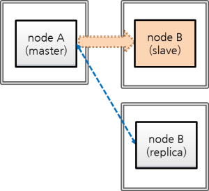- nodeA: a host name of a master node
- nodeB: a host name of a slave node to be rebuilt
- nodeC: a host name of a replica node
Stop nodeB’s service and remove this database
After stopping nodeB’s service, remove nodeB’s database volumes and nodeB’s replication logs located in nodeA and nodeC.
Stop nodeB’s service.
[nodeB]$ cubrid heartbeat stop [nodeB]$ cubrid service stop
Remove nodeB’s database volumes and replication logs.
[nodeB]$ cd $CUBRID_DATABASES [nodeB]$ rm testdb/* [nodeB]$ rm testdb/log/* [nodeB]$ rm -rf testdb_nodeA [nodeB]$ rm $CUBRID/var/APPLYLOGDB/testdb
Stop log replication processes of nodeB on nodeA and nodeC.
[nodeA]$ cubrid heartbeat repl stop nodeB [nodeC]$ cubrid heartbeat repl stop nodeB
Remove replication logs for nodeB from nodeA and nodeC.
[nodeA]$ rm -rf $CUBRID_DATABASES/testdb_nodeB [nodeC]$ rm -rf $CUBRID_DATABASES/testdb_nodeB
Restore nodeB’s database from nodeA’s backup, and add data to HA catalog table.
- Delete db_ha_apply_info data for nodeB from nodeA and nodeC.
[nodeA]$ csql --sysadm -u dba testdb@localhost csql> DELETE FROM db_ha_apply_info WHERE copied_log_path='/home/cubrid/DB/databases/testdb_nodeB'; [nodeC]$ csql --sysadm --write-on-standby -u dba testdb@localhost csql> DELETE FROM db_ha_apply_info WHERE copied_log_path='/home/cubrid/DB/databases/testdb_nodeB';
Backup a database from nodeA.
[nodeA]$ cd $CUBRID_DATABASES/testdb/log [nodeA]$ cubrid backupdb --sleep-msecs=10 -C -o output.txt testdb@localhost
Note
Please refer to –sleep-msecs of Build Another Slave during HA Service.
Copy backup files to nodeB.
[nodeA]$ [nodeA]$ scp testdb_bk* cubrid_usr@nodeB:$CUBRID_DATABASES/testdb/log
Note
scp command’s -l option is an option to control the amount of copying file; when you copy files between nodes, use this properly as considering I/O overhead. The unit is Kbits. 131072 is 16MB.
Restore the database into nodeB.
At this time, the volume path of the master node must be identical to that of the slave node.
[nodeB]$ cubrid restoredb -B $CUBRID_DATABASES/testdb/log testdb
Add a replication information record for nodeA to nodeB’s db_ha_apply_info.
Get an update information of db_ha_apply_info from output.txt file, which has backup result messages in nodeA. output.txt is saved at the directory on which a user ran “cubrid backupdb” command.
[nodeA]$ vi $CUBRID_DATABASES/testdb/log/output.txt [ Database(testdb) Full Backup start ] - num-threads: 2 - compression method: NONE - sleep 10 millisecond per 1M read. - backup start time: Fri Mar 20 18:18:53 2015 - number of permanent volumes: 2 - HA apply info: testdb 1426495463 12922 16192 - backup progress status ...
Make the below script and run. At “HA apply info” on the above output, put the first number, 1426495463 into $db_creation, the second number, 12922 into $pageid, and the third number, 16192 into $offset; put testdb into db_name, the database name and nodeA into master_host, the master node’s host name.
[nodeB]$ vi update.sh #!/bin/sh db_creation=1426495463 page_id=12922 offset=16192 db_name=testdb master_host=nodeA repl_log_home_abs=$CUBRID_DATABASES repl_log_path=$repl_log_home_abs/${db_name}_${master_host} local_db_creation=`awk 'BEGIN { print strftime("%m/%d/%Y %H:%M:%S", '$db_creation') }'` csql_cmd="\ INSERT INTO \ db_ha_apply_info \ VALUES \ ( \ '$db_name', \ datetime '$local_db_creation', \ '$repl_log_path', \ $page_id, $offset, \ $page_id, $offset, \ $page_id, $offset, \ $page_id, $offset, \ $page_id, $offset, \ $page_id, $offset, \ NULL, \ NULL, \ NULL, \ 0, \ 0, \ 0, \ 0, \ 0, \ 0, \ 0, \ NULL \ )" # Insert nodeA's HA info. csql --sysadm -u dba -c "$csql_cmd" -S testdb[nodeB]$ sh update.sh
Check if the data is successfully inserted.
[nodeB]$ csql -u dba -S testdb csql> ;line on csql> SELECT * FROM db_ha_apply_info;
Copy nodeA’s active log into nodeB
In nodeA’s active log, there exists a number information of the archive log which is recently created. This information is needed for archive logs, which has been created after the time in which the active log had been copied, to be automatically copied by copylogdb process after the start of HA service of nodeC; therefore, the user just needs to manually copy archive logs which has been created before copying an active log.
Start cub_master which manages HA connection in nodeB.
[nodeB]$ cub_master
Start copylogdb process for nodeA on nodeB.
[nodeB]$ cubrid heartbeat copylogdb start testdb nodeA
Check if an active log of nodeA is copied.
To copy the current active log means to obtain the number information of the last archive log. Archive logs after this time are automatically copied after the process [5. Start HA server in nodeB].
[nodeB]$ cd $CUBRID_DATABASES/testdb_nodeA [nodeB]$ ls testdb_lgar_t testdb_lgat testdb_lgat__lock
Stop copylogdb process for nodeA on nodeB.
[nodeB]$ cubrid heartbeat copylogdb stop testdb nodeA
Stopo nodeB’s cub_master.
[nodeB]$ cubrid service stop
Copy required log files after restoring a database into nodeB
Copy all archive logs of nodeA into nodeB.
[nodeB]$ cd $CUBRID_DATABASES/testdb_nodeA [nodeB]$ scp -l 131072 cubrid@nodeA:$CUBRID_DATABASES/testdb/log/testdb_lgar0* .
In this process, please note that all replicated archive logs which are required for replication should exist.
Note
scp command’s -l option is an option to control the amount of copying file; when you copy files between nodes, use this properly as considering I/O overhead. The unit is Kbits. 131072 is 16MB.
Note
Copy files of which the names end with a number. Here, we copied with “testdb_lgar0*” because numbers of names of all replication log files are started with 0.
Note
When required logs are already deleted
Archive logs which are created between backup time and active log creation time can be deleted if the value of log_max_archives is not large enough; in this case, an error can occur when running the below process, [5. Start HA service on nodeB …].
When an error occurs, enlarge the value of log_max_archives enough and proceed again backup-and-restore from the beginning.
Start HA service on nodeB; restart copylogdb and applylogdb processes on nodeA and nodeC
[nodeB]$ cubrid heartbeat start
[nodeA]$ cubrid heartbeat applylogdb start testdb nodeB [nodeA]$ cubrid heartbeat copylogdb start testdb nodeB [nodeC]$ cubrid heartbeat applylogdb start testdb nodeB [nodeC]$ cubrid heartbeat copylogdb start testdb nodeB
Detection of Replication Mismatch¶
How to Detect Replication Mismatch¶
Replication mismatch between replication nodes, indicating that data of the master node and the slave node (or the replica node) is not identical, can be detected to some degree by the following process. You can also use checksumdb utility to detect a replication inconsistency. However, please note that there is no more accurate way to detect a replication mismatch than by directly comparing the data of the master node to the data of the slave node (or the replica node). If it is determined that there has been a replication mismatch, you should rebuild the database of the master node to the slave node (or the replica node) (see Rebuilding Replication Script.)
Execute cubrid statdump command and check Time_ha_replication_delay. When this value is bigger, replication latency can be larger; the bigger latency time shows the possibility of the larger replication mismatch.
On the slave node (or the replica node), execute cubrid applyinfo to check the “Fail count” value. If the “Fail count” is 0, it can be determined that no transaction has failed in replication (see applyinfo.)
[nodeB]$ cubrid applyinfo -L /home/cubrid/DB/testdb_nodeA -r nodeA -a testdb *** Applied Info. *** Committed page : 1913 | 2904 Insert count : 645 Update count : 0 Delete count : 0 Schema count : 60 Commit count : 15 Fail count : 0 ...
To check whether copying replication logs has been delayed or not on the slave node (or the replica node), execute cubrid applyinfo and compare the “Append LSA” value of “Copied Active Info.” to the “Append LSA” value of “Active Info.”. If there is a big difference between the two values, it means that delay has occurred while copying the replication logs to the slave node (or the replica node) (see applyinfo.)
[nodeB]$ cubrid applyinfo -L /home/cubrid/DB/testdb_nodeA -r nodeA -a testdb ... *** Copied Active Info. *** DB name : testdb DB creation time : 11:28:00.000 AM 12/17/2010 (1292552880) EOF LSA : 1913 | 2976 Append LSA : 1913 | 2976 HA server state : active *** Active Info. *** DB name : testdb DB creation time : 11:28:00.000 AM 12/17/2010 (1292552880) EOF LSA : 1913 | 2976 Append LSA : 1913 | 2976 HA server state : active
If a delay seems to occur when copying the replication logs, check whether the network line speed is slow, whether there is sufficient free disk space, disk I/O is normal, etc.
To check the delay in applying the replication log in the slave node (or the replica node), execute cubrid applyinfo and compare the “Committed page” value of “Applied Info.” to the “EOF LSA” value of “Copied Active Info.”. If there is a big difference between the two values, it means that a delay has occurred while applying the replication logs to the slave database (or the replica database) (see applyinfo.)
[nodeB]$ cubrid applyinfo -L /home/cubrid/DB/testdb_nodeA -r nodeA -a testdb *** Applied Info. *** Committed page : 1913 | 2904 Insert count : 645 Update count : 0 Delete count : 0 Schema count : 60 Commit count : 15 Fail count : 0 *** Copied Active Info. *** DB name : testdb DB creation time : 11:28:00.000 AM 12/17/2010 (1292552880) EOF LSA : 1913 | 2976 Append LSA : 1913 | 2976 HA server state : active ...
If the delay in applying the replication logs is too long, it may be due to a transaction with a long execution time. If the transaction is performed normally, a delay in applying the replication logs may normally occur. To determine whether it is normal or abnormal, continuously execute cubrid applyinfo and check whether applylogdb continuously applies replication logs to the slave node (or the replica node) or not.
Check the error log message created by the copylogdb process and the applylogdb process (see the error message).
Compare the number of records on the master database table to that on the slave (or the replica) database table.
checksumdb¶
checksumdb provides a simple way to check replication integrity. Basically, it divides each table from a master node into fixed-size chunks and then calculates CRC32 values. The calculation itself, not the calculated value, is then replicated through CUBRID HA. Consequently, by comparing CRC32 values calculated on master and slave nodes (or replica nodes), checksumdb can report the replication integrity. Note that checksumdb might affect master’s performance even though it is designed to minimize the performance degradation.
cubrid checksumdb [options] <database-name>@<hostname>
- <hostname> : When you initiates checksum calculation, you need to specify the hostname of a master node. When you need to get the result after the calculation is completed, specify the hostname of a node you want to check.
-
-c,--chunk-size=NUMBER¶ You can specify the number of rows to select for each CRC32 calculation. (default: 500 rows, minimum: 100 rows)
-
-s,--sleep=NUMBER¶ checksumdb sleeps the specified amount of time after calculating each chunk (default: 100 ms)
-
-i,--include-class-file=FILE¶ You can specify tables to check the replication mismatch by specifying the -i FILE option. If it is not specified, entire tables will be checked. Empty string, tab, carriage return and comma are separators among table names in the file.
-
-e,--exclude-class-file=FILE¶ You can specify tables to exclude from checking the replication mismatch by specifying the -e FILE option. Note that either -i or -e can be used, not both.
-
-t,--timeout=NUMBER¶ You can specify a calculation timeout with this option. (default: 1000 ms) If the timeout is reached, the calculation will be cancelled and will be resumed after a short period of time.
-
-n,--table-name=STRING¶ You can specify a table name to save checksum results. The table name must include the owner’s name which can only be dba. (default: dba.db_ha_checksum)
-
-r,--report-only¶ After checksum calculation is completed, you can get a report with this option.
-
--resume¶ When checksum calculation is aborted, you can resume the calculation using this option.
-
--schema-only¶ When this option is given, checksumdb does not calculate CRC32 but only check schema of each table
-
--cont-on-error¶ Without this option, checksumdb halts on errors.
The following example shows how to start checksumdb
cubrid checksumdb -c 100 -s 10 testdb@master
When no replication mismatch found,
$ cubrid checksumdb -r testdb@slave
================================================================
target DB: testdb@slave (state: standby)
report time: 2016-01-14 16:33:30
checksum table name: db_ha_checksum, db_ha_checksum_schema
================================================================
------------------------
different table schema
------------------------
NONE
----------------------------------------------------------------
table name diff chunk id chunk lower bound
----------------------------------------------------------------
NONE
--------------------------------------------------------------------------------------
table name total # of chunks # of diff chunks total/avg/min/max time
--------------------------------------------------------------------------------------
t1 7 0 88 / 12 / 5 / 14 (ms)
t2 7 0 96 / 13 / 11 / 15 (ms)
When there is a replication mismatch in table t1,
$ cubrid checksumdb -r testdb@slave
================================================================
target DB: testdb@slave (state: standby)
report time: 2016-01-14 16:35:57
checksum table name: db_ha_checksum, db_ha_checksum_schema
================================================================
------------------------
different table schema
------------------------
NONE
----------------------------------------------------------------
table name diff chunk id chunk lower bound
----------------------------------------------------------------
t1 0 (id>=1)
t1 1 (id>=100)
t1 4 (id>=397)
--------------------------------------------------------------------------------------
table name total # of chunks # of diff chunks total/avg/min/max time
--------------------------------------------------------------------------------------
t1 7 3 86 / 12 / 5 / 14 (ms)
t2 7 0 93 / 13 / 11 / 15 (ms)
When there is a schema mismatch in table t1,
$ cubrid checksumdb -r testdb@slave
================================================================
target DB: testdb@slave (state: standby)
report time: 2016-01-14 16:40:56
checksum table name: db_ha_checksum, db_ha_checksum_schema
================================================================
------------------------
different table schema
------------------------
<table name>
t1
<current schema - collected at 04:40:53.947 PM 01/14/2016>
CREATE TABLE [t1] ([id] INTEGER NOT NULL, [col1] CHARACTER VARYING(20), [col2] INTEGER, [col3] DATETIME, [col4] INTEGER, CONSTRAINT [pk_t1_id] PRIMARY KEY ([id])) COLLATE iso88591_bin
<schema from master>
CREATE TABLE [t1] ([id] INTEGER NOT NULL, [col1] CHARACTER VARYING(20), [col2] INTEGER, [col3] DATETIME, CONSTRAINT [pk_t1_id] PRIMARY KEY ([id])) COLLATE iso88591_bin
* Due to schema inconsistency, the checksum difference of the above table(s) may not be reported.
----------------------------------------------------------------
table name diff chunk id chunk lower bound
----------------------------------------------------------------
NONE
--------------------------------------------------------------------------------------
table name total # of chunks # of diff chunks total/avg/min/max time
--------------------------------------------------------------------------------------
t1 7 0 95 / 13 / 11 / 16 (ms)
t2 7 0 94 / 13 / 11 / 15 (ms)
HA Error Messages¶
The following are error messages about the errors which can be reasons for the replication mismatch.
CAS process(cub_cas)¶
Error messages in CAS process are written to $CUBRID/log/broker/error_log/<broker_name>_<app_server_num>.err. The following table shows connection error messages in the HA environment.
Error messages for handshaking between a broker and a DB server
| Error Code | Error message | Severity | Description | Solution |
|---|---|---|---|---|
| -1139 | Handshake error (peer host ?): incompatible read/write mode. (client: ?, server: ?) | error | ACCESS_MODE of broker and the status of server (active/standby) is not the same (see Broker Mode). | |
| -1140 | Handshake error (peer host ?): HA replication delayed. | error | Replication is delayed in the server which set ha_delay_limit. | |
| -1141 | Handshake error (peer host ?): replica-only client to non-replica server. | error | A broker(CAS) which can access only a replica attempts to connect to the server which is not a replica(see Broker Mode). | |
| -1142 | Handshake error (peer host ?): remote access to server not allowed. | error | It attempts to connect to a server with HA maintenance mode(see Servers). | |
| -1143 | Handshake error (peer host ?): unidentified server version. | error | Server version is unidentified. |
Connection Error Messages
| Error Code | Error message | Severity | Description | Solution |
|---|---|---|---|---|
| -353 | Cannot make connection to master server on host ?. | error | cub_master process went down. | |
| -1144 | Timed out attempting to connect to ?. (timeout: ? sec(s)) | error | The machine went down. |
Replication Log Copy Process(copylogdb)¶
The error messages from the replication log copy process are stored in $CUBRID/log/<db-name>@<remote-node-name>_copylogdb.err. The severity levels of error messages found in the replication log copy process are as follows: fatal, error, and notification. The default level is error. Therefore, to record notification error messages, it is necessary to change the value of error_log_level in the cubrid.conf file. For details, see Error Message-Related Parameters.
Initialization Error Messages
The error messages that can be found in initialization stage of replication log copy process are as follows:
| Error Code | Error Message | Severity | Description | Solution |
|---|---|---|---|---|
| -10 | Cannot mount the disk volume ?. | error | Fails to open a replication log file. | Check if replication logs exist. For the location of replication logs, see Default Environment Configuration. |
| -78 | Internal error: an I/O error occurred while reading logical log page ? (physical page ?) of ? | fatal | Fails to read a replication log. | Check the replication log by using the cubrid applyinfo utility. |
| -81 | Internal error: logical log page ? may be corrupted. | fatal | A replication log page error, in which the replication log copy process has been copied from the connected database server process. | Check the error log of the database server process to which the replication log copy process is connected. This error log can be found in $CUBRID/log/server. |
| -1039 | log writer: log writer has been started. mode: ? | error | The replication log copy process has been successfully initialized and started. | No action is required because this error message is recorded to display the start information of the replication log copy process. Ignore any error messages which are displayed between the start of replication log copy process and output of this error message since there is a possibility that an error message is shown up even in normal situation. |
Replication Log Request and Reception Error Messages
The replication log copy process requests a replication log from the connected database server and receives the corresponding replication log. Error messages that can be found in this stage are as follows:
| Error Code | Error Message | Severity | Description | Solution |
|---|---|---|---|---|
| -89 | Log ? is not included in the given database. | error | The previously replicated log and the log to be replication do not match. | Check information of the database server/host to which the replication log copy process is connected. If you need to change the database server/host information, reinitialize it by deleting the existing replication log and then restarting. |
| -186 | Data receiver error from the server | error | Incorrect information has been received from the database server to which the replication log copy process is connected. | It will be internally recovered. |
| -199 | The server is not responding. | error | The connection to the database server has been terminated. | It will be internally recovered. |
Replication Log Write Error Messages
The replication log copy process copies the replication log that was received from the connected database server process to the location (ha_copy_log_base) specified in the cubrid_ha.conf file. Error messages that can be found in this stage are as follows:
| Error Code | Error Message | Severity | Description | Solution |
|---|---|---|---|---|
| -10 | Cannot mount the disk volume ?. | error | Fails to open a replication log file. | Check if replication logs exist. |
| -79 | Internal error: an I/O error occurred while writing logical log page ? (physical page ?) of ?. | fatal | Fails to write a replication log. | It will be internally recovered. |
| -80 | An error occurred due to insufficient space in operating system device while writing logical log page ?(physical page ?) of ?. Up to ? bytes in size are allowed. | fatal | Fails to write a replication log due to insufficient file system space. | Check if there is sufficient space left in the disk partition. |
Replication Log Archive Error Messages
The replication log copy process periodically archives the replication logs that have been received from the connected database server process. Error messages that can be found in this stage are as follows:
| Error Code | Error Message | Severity | Description | Solution |
|---|---|---|---|---|
| -78 | Internal error: an I/O error occurred while reading logical log page ? (physical page ?) of ?. | fatal | Fails to read a replication log during archiving. | Check the replication log by using the cubrid applyinfo utility. |
| -79 | Internal error: an I/O error occurred while writing logical log page ? (physical page ?) of ?. | fatal | Fails to write an archive log. | It will be internally recovered. |
| -81 | Internal error: logical log page ? may be corrupted. | fatal | Found an error on the replication log during archiving. | Check the replication log by using the cubrid applyinfo utility. |
| -98 | Cannot create an archive log ? to archive pages from ? to ?. | fatal | Fails to create an archive log file. | Check if there is sufficient space left in the disk partition. |
| -974 | An archive log ? to archive pages from ? to ? has been created. | notification | Information on an archive log file | No action is required because this error message is recorded to keep information on newly created archive. |
Stop and Restart Error Messages
Error messages that can be found in this stage are as follows:
| Error Code | Error Message | Severity | Description | Solution |
|---|---|---|---|---|
| -1037 | log writer: log writer is terminated by signal. | error | The copylogdb process has been terminated by a specified signal. | It will be internally recovered. |
Replication Log Reflection Process(applylogdb)¶
The error messages from the replication log reflection process are stored in $CUBRID/log/db-name@local-node-name_applylogdb_db-name_remote-node-name.err. The severity levels of error message found in the replication log reflection process are as follow: fatal, error, and notification. The default level is error. Therefore, to record notification error messages, it is necessary to change the value of error_log_level in the cubrid.conf file. For details, see Error Message-Related Parameters.
Initialization Error Messages
The error messages that can be found in initialization stage of replication log reflection process are as follows:
| Error Code | Error Message | Severity | Description | Solution |
|---|---|---|---|---|
| -10 | Cannot mount the disk volume ?. | error | An applylogdb that is trying to reflect the same replication log is already running. | Check if there is an applylogdb process that is trying to reflect the same replication log. |
| -1038 | log applier: log applier has been started. required LSA: ?|?. last committed LSA: ?|?. last committed repl LSA: ?|? | error | It will be started normally after initialization of applylogdb succeeds. | No action is required because this error is recorded to display the start information of the replication log reflection process. |
Log Analysis Error Messages
The replication log reflection process reads, analyzes, and reflects the replications logs that have been copied by the replication log copy process. The error message that can be found in this stage are as follows:
| Error Code | Error Message | Severity | Description | Solution |
|---|---|---|---|---|
| -13 | An I/O error occurred while reading page ? in volume ?. | error | Fails to read a log page to be reflected. | Check the replication log by using the cubrid applyinfo utility. |
| -17 | Internal error: Trying to read page ? of the volume ? which has been already released. | fatal | Trying to read a log page that does not exist in the replication log. | Check the replication log by using the cubrid applyinfo utility. |
| -81 | Internal error: logical log page ? may be corrupted. | fatal | There is an inconsistency between an old log under replication reflection and the current log, or there is a replication log record error. | Check the replication log by using the cubrid applyinfo utility. |
| -82 | Cannot mount the disk volume/file ?. | error | No replication log file exists. | Check if replication logs exist. Check the replication log by using the cubrid applyinfo utility. |
| -97 | Internal error: unable to find log page ? in log archives. | error | No log page exists in the replication log. | Check the replication log by using the cubrid applyinfo utility. |
| -897 | Decompression failure | error | Fails to decompress the log record. | Check the replication log by using the cubrid applyinfo utility. |
| -1028 | log applier: Unexpected EOF log record exists in the Archive log. LSA: ?|?. | error | Incorrect log record exists in the archive log. | Check the replication log by using the cubrid applyinfo utility. |
| -1029 | log applier: Incorrect log page/offset. page HDR: ?|?, final: ?|?, append LSA: ?|?, EOF LSA: ?|?, ha file status: ?, is end-of-log: ?. | error | Incorrect log record exists. | Check the replication log by using the cubrid applyinfo utility. |
| -1030 | log applier: Incorrect log record. LSA: ?|?, forw LSA: ?|?, backw LSA: ?|?, Trid: ?, prev tran LSA: ?|?, type: ?. | error | Log record header error | Check the replication log by using the cubrid applyinfo utility. |
Replication Log Reflection Error Messages
The replication log reflection process reads, analyzes, and reflects the replication logs that have been copied by the replication log copy process. Error messages that can be found in this stage are as follows:
| Error Code | Error Message | Severity | Description | Solution |
|---|---|---|---|---|
| -72 | The transaction (index ?, ?@?|?) has been cancelled by system. | error | Fails to reflect replication due to deadlock, etc. | It will be recovered internally. |
| -111 | Your transaction has been cancelled due to server failure or a mode change. | error | Fails to reflect replication because the database server process in which replication is supposed to be reflected has been terminated or its mode has been changed. | It will be recovered internally. |
| -191 | Cannot connect to server ? on ?. | error | The connection to the database server process in which replication is supposed to be reflected has been terminated. | It will be recovered internally. |
| -195 | Server communication error: ?. | error | The connection to the database server process in which replication is supposed to be reflected has been terminated. | It will be recovered internally. |
| -224 | The database has not been resumed. | error | The connection to the database server process in which replication is supposed to be reflected has been terminated. | It will be recovered internally. |
| -1027 | log applier: Failed to change the reflection status from ? to ?. | error | Fails to change of replication reflection. | It will be recovered internally. |
| -1031 | log applier: Failed to reflect the Schema replication log. class: ?, schema: ?, internal error: ?. | error | Fails to reflect SCHEMA replication. | Check the consistency of the replication. If it is inconsistent, reconfigure the HA replication. |
| -1032 | log applier: Failed to reflect the Insert replication log. class: ?, key: ?, internal error: ?. | error | Fails to reflect INSERT replication. | Check the consistency of the replication. If it is inconsistent, reconfigure the HA replication. |
| -1033 | log applier: Failed to reflect the Update replication log. class: ?, key: ?, internal error: ?. | error | Fails to reflect UPDATE replication. | Check the consistency of the replication. If it is inconsistent, reconfigure the HA replication. |
| -1034 | log applier: Failed to reflect the Delete replication log. class: ?, key: ?, internal error: ?. | error | Fails to reflect DELETE replication. | Check the consistency of the replication. If it is inconsistent, reconfigure the HA replication. |
| -1040 | HA generic: ?. | notification | Changes the last record of the archive log or replication reflection status. | No action is required because this error message is recorded to provide general information. |
Stop and Restart Error Messages
The error messages that can be found in this stage are as follows:
| Error Code | Error Message | Severity | Description | Solution |
|---|---|---|---|---|
| -1035 | log applier: The memory size (? MB) of the log applier is larger than the maximum memory size (? MB), or is doubled the starting memory size (? MB) or more. required LSA: ?|?. last committed LSA: ?|?. | error | The replication log reflection process has been restarted due to reaching the maximum memory size limit. | It will be recovered internally. |
| -1036 | log applier: log applier is terminated by signal. | error | The replication log reflection process has been terminated by a specified signal. | It will be recovered internally. |
Rebuilding Replication Script¶
Replication rebuilding is required in CUBRID HA when data in the CUBRID HA group is inconsistent because of multiple failures in multiple-slave node structure, or because of a generic error. Rebuilding replications in CUBRID HA is perform done through a ha_make_slavedb.sh script. With the cubrid applyinfo utility, you can check the replication progress; however replication inconsistency is not detected. If you want to determine whether replication is inconsistent correctly, you must examine data of the master and slave nodes yourself.
When you rebuild only a slave because the slave is abnormal in the environment of master-slave composition, the process is as follows.
- Backup the master database.
- Restore the database from slave.
- Save backup time into the slave’s HA meta table (db_ha_apply_info).
- Start HA service from slave. (cubrid hb start)
For rebuilding replications, the following environment must be the same in master, slave and replica nodes.
- CUBRID version
- Environmental variable ($CUBRID, $CUBRID_DATABASES, $LD_LIBRARY_PATH, $PATH, $CUBRID_TMP, $TMPDIR)
- The paths of database volume, log, and replication
- Username and password of the Linux server
- HA-related parameters except for ha_mode, ha_copy_sync_mode, ha_ping_hosts and ha_tcp_ping_hosts
You can rebuild replication by running ha_make_slavedb.sh script only in these cases.
- from-master-to-slave
- from-slave-to-replica
- from-replica-to-replica
- from-replica-to-slave
For the other cases, you should build manually. For the manual building scenarios, see Building Replication.
If the case is not for rebuilding but for newly building, configure cubrid.conf, cubrid_ha.conf, and databases.txt files as the same with master’s.
In the below description, first, we will look over the cases to use ha_make_slavedb.sh script, which is used to rebuilding replication.
As a reference, you cannot use ha_make_slavedb.sh script when you want to build multiple slave nodes.
ha_make_slavedb.sh Script¶
To rebuild replications, use the ha_make_slavedb.sh script. This script is located in $CUBRID/share/scripts/ha. Before rebuilding replications, the following items must be configured for the environment of the user. This script is supported since the version 2008 R2.2 Patch 9 and its configuration is different from 2008 R4.1 Patch 2 or earlier. This document describes it in CUBRID 2008 R4.1 Patch 2 or later.
- target_host : The host name of the source node (master node in general) for rebuilding replication. It should be registered in /etc/hosts. A slave node can rebuild replication by using the master node or the replica node as the source. A replica node can rebuild replication by using the slave node or another replica node as the source.
- repl_log_home : Specifies the home directory of the replication log of the master node. It is usually the same as $CUBRID_DATABASES. You must enter an absolute path and should not use a symbolic link. You also cannot use a slash (/) after the path.
The following are optional items:
- db_name : Specifies the name of the database to be replicated. If not specified, the first name that appears in ha_db_list in $CUBRID/conf/cubrid_ha.conf is used.
- backup_dest_path : Specifies the path in which the backup volume is created when executing backupdb in source node for rebuilding replication.
- backup_option : Specifies necessary options when executing backupdb in the source node in which replication will be rebuilt.
- restore_option : Specifies necessary options when executing restoredb in the target node in which replication will be rebuilt.
- scp_option : Specifies the scp option which enables backup of source node in which replication is rebuilt to copy into the target node. The default option is -l 131072, which does not impose an overload on network (limits the transfer rate to 16 MB).
- ssh_port : Specifies the port number of the ssh and scp used in the script. This option also applies to expect run from the script. The default port number is 22.
Once the script has been configured, execute the ha_make_slavedb.sh script in the target node in which replication will be rebuilt. When the script is executed, rebuilding replication happens in a number of phases. To move to the next stage, the user must enter an appropriate value. The following are the descriptions of available values.
- yes : Keeps going.
- no : Does not move forward with any stages from now on.
- skip: Skips to the next stage. This input value is used to ignore a stage that has not necessarily been executed when retrying the script after it has failed.
Warning
- ha_make_slavedb.sh script executes the connection command into the remote node by expect and ssh; therefore, expect command should be installed(‘yum install expect’ in root account) and ssh should be possible in remote connection.
Note
Backup volumes are required for rebuilding replication
To replicate, you must copy the physical image of the database volume in the target node to the database of the node to be replicated. However, cubrid unloaddb backs up only logical images so replication using cubrid unloaddb and cubrid loaddb is unavailable. Because cubrid backupdb backs up physical images, replication is possible by using this utility. The ha_make_slavedb.sh script performs replication by using cubrid backupdb.
Online-backup of a source node and restoration of a rebuilding node during rebuilding replication.
ha_make_slavedb.sh script executes online backup about a source node during DB operation, and restore to the being-rebuilt node. To apply added transactions after backup to the being-rebuilt node, ha_make_slavedb.sh script use the archive logs of “master” node by copying(in all cases, archive logs of “master” are used; all cases include how to build slave from master, how to build replica from slave and how to build replica from replica).
Therefore, so as not to remove archive logs which have been added to the source node during the execution of the online backup, there is a need to properly set force_remove_log_max_archives and log_max_archives in cubrid.conf from the master node. For details, see the below building examples.
Error while executing the rebuilding replication script
The rebuilding replication script is not automatically rolled back to its previous stage even when an error occurs during the execution. This is because the slave node cannot provide normal service before rebuilding replication script is executed. To return to the phase before rebuilding replication script is executed, you must back up the existing replication logs and db_ha_apply_info information which is internal catalog of the master and slave nodes before building replication is executed.